<!doctype html>
<html lang="en">
<head>
  <meta charset="utf-8">
  <meta name="viewport" content="width=device-width, initial-scale=1">
  <title>arxiv digest — 2026-06-15</title>
  <style>
:root {
  --bg: #ffffff;
  --fg: #1f2328;
  --muted: #59636e;
  --border: #d0d7de;
  --card: #f6f8fa;
  --link: #0969da;
}
body {
  max-width: 980px;
  margin: 0 auto;
  padding: 2rem 1rem 5rem;
  font-family: -apple-system, BlinkMacSystemFont, "Segoe UI", Helvetica, Arial, sans-serif;
  line-height: 1.55;
  color: var(--fg);
  background: var(--bg);
}
a { color: var(--link); }
img { max-width: 100%; height: auto; }
pre, code { background: var(--card); border-radius: 6px; }
pre { padding: 1rem; overflow-x: auto; }
blockquote { border-left: 4px solid var(--border); padding-left: 1rem; color: var(--muted); }
details { margin: 0.6rem 0; }
summary { cursor: pointer; font-weight: 600; }
.paper-figures-scroll {
  display: flex;
  gap: 1rem;
  overflow-x: auto;
  overscroll-behavior-x: contain;
  padding: 0.75rem 0.25rem 1rem;
  margin: 1rem 0 1.25rem;
  border-top: 1px solid var(--border);
  border-bottom: 1px solid var(--border);
  scroll-snap-type: x proximity;
}
.paper-figure-card {
  flex: 0 0 min(260px, 72vw);
  scroll-snap-align: start;
  background: var(--card);
  border: 1px solid var(--border);
  border-radius: 12px;
  padding: 0.55rem;
}
.paper-figure-card img {
  display: block;
  width: 100%;
  max-height: 240px;
  object-fit: contain;
  background: white;
  border-radius: 8px;
}
.paper-figure-caption {
  display: block;
  margin-top: 0.5rem;
  color: var(--muted);
  font-size: 0.85rem;
}
.figure-strip-hint {
  color: var(--muted);
  font-size: 0.9rem;
  margin-bottom: -0.3rem;
}
</style>
  <!-- MathJax: renders $...$ inline math and $$...$$ display math, plus
       \(...\) and \[...\]. Loaded from the official CDN; works offline
       once cached. Configured to skip code/pre blocks so arxiv IDs that
       look like dollar amounts don't get mangled. -->
  <script>
    window.MathJax = {
      tex: {
        inlineMath: [['$', '$'], ['\\(', '\\)']],
        displayMath: [['$$', '$$'], ['\\[', '\\]']],
        processEscapes: true,
        processEnvironments: true
      },
      options: {
        skipHtmlTags: ['script', 'noscript', 'style', 'textarea', 'pre', 'code'],
        ignoreHtmlClass: 'tex2jax_ignore',
        processHtmlClass: 'tex2jax_process'
      }
    };
  </script>
  <script id="MathJax-script" async
    src="https://cdn.jsdelivr.net/npm/mathjax@3/es5/tex-chtml.js"></script>
</head>
<body>
<header style="background-color: #333; color: white; padding: 15px; margin-bottom: 20px;">
  <h1 style="margin: 0; font-size: 24px;">
    <a href="https://ochelpan.github.io/arXiv_clean/" style="color: white; text-decoration: none;">Main</a>
  </h1>
</header>

<h1>Daily arXiv Report</h1>

<hr>
<p>
<a href="index.html">← Index</a>
 · <a href="papers_02.html">Next →</a>
</p>
<hr>

<h2>Papers 1–20</h2>
<p><a id="paper-2606.14593"></a></p>
<h3 id="on-site-interactions-in-quantum-thermal-machines-efficiency-rectification-and-entanglement-beyond-local-and-global-master-equations">⭐ <a href="http://arxiv.org/abs/2606.14593v1">On-site interactions in quantum thermal machines: efficiency, rectification and entanglement beyond local and global master equations</a></h3>
<p><strong>Highlighted author(s):</strong> Andrew J. Daley<br>
<strong>Authors:</strong> Salvatore Araceli, Teddy H. M. Ong, Baptiste Debecker, Kai Müller, Oliver Lunt, Andrew J. Daley, François Damanet<br>
<strong>Type:</strong> theory · <strong>Category:</strong> statistical mechanics · <strong>PDF:</strong> <a href="https://arxiv.org/pdf/2606.14593v1">https://arxiv.org/pdf/2606.14593v1</a><br>
<strong>Analysis basis:</strong> full PDF text, analyzed in chunks
<strong>Topic relevance:</strong> 🔥 <code>methods for driven-dissipative</code> <strong>4/5</strong> · 🔥 <code>non-equilibrium dynamics</code> <strong>4/5</strong> · <code>Keldysh / 2PI / non-Gaussian methods</code> <strong>3/5</strong> · <code>correlated / nonlocal dissipation</code> <strong>3/5</strong> · <code>driven-dissipative phase transition</code> <strong>3/5</strong> · <code>entanglement &amp; information structure</code> <strong>3/5</strong> · <code>non-equilibrium universality</code> <strong>2/5</strong> · <code>Kondo &amp; dissipative impurity</code> <strong>1/5</strong> · <code>analog quantum simulation</code> <strong>1/5</strong> · <code>exotic spin models in light-matter</code> <strong>1/5</strong> · <code>scars &amp; prethermalization</code> <strong>1/5</strong></p>
<div class="figure-strip-hint">↔ Scroll figures horizontally</div>
<div class="paper-figures-scroll">
<figure class="paper-figure-card">
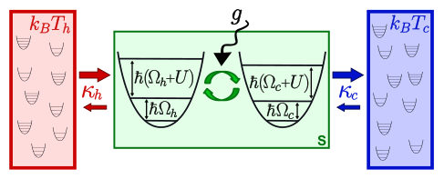
<figcaption class="paper-figure-caption"><b>Fig 1.</b> FIG. 1. Sketch of the two-site junction of frequencies Ωℓ(ℓ= ℎ, 𝑐) and on-site interactions 𝑈, coupled to two thermal reservoirs of temperature 𝑇ℓ. The tunnelling rate between the reservoirs and the junction is modulated by 𝜅ℓ. The model also includes an external driving that couples the two sites with amplitude 𝑔. This setup can generate power from the thermal gradient between the two reservoirs, as heat currents flow through the junction.</figcaption>
</figure>
<figure class="paper-figure-card">
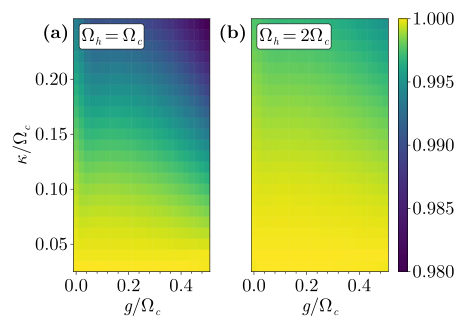
<figcaption class="paper-figure-caption"><b>Fig 2.</b> FIG. 3. Fidelity (Eq. (43)) between the steady-states obtained by the RME and the Exact method as a function of 𝜅and 𝑔for Ωℎ= Ω𝑐 (panel (a)) and Ωℎ= 2Ω𝑐(panel (b)). As expected, the fidelity decreases for larger 𝜅, but RME still predicts the state reasonably well even for 𝜅/Ω𝑐= 0.25, particularly when Ωℎ&gt; Ω𝑐. System parameters are the same as in Fig. 2. Exact method parameters: 𝑁bath = 2000, 𝑡evo = 30/𝜅.</figcaption>
</figure>
<figure class="paper-figure-card">
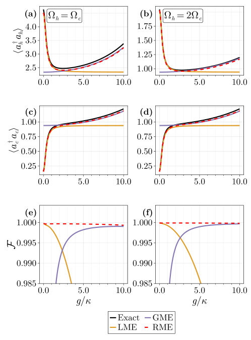
<figcaption class="paper-figure-caption"><b>Fig 3.</b> FIG. 2. Comparison of steady-state properties obtained from the LME (Eq. (31)), GME (Eq. (35)), RME (Eq. (25)), and the Exact method for 𝑈= 0 as a function of the intercoupling strength 𝑔/𝜅. Panels (a) and (b) (resp. (c) and (d)) show the populations of the left (resp. right) sites in two different setup: when the frequencies of the sites are taken the same (left column) and when they are not (right column). The RME results (red, dashed) interpolate perfectly between those of the LME (yellow), valid for small intercoupling, and the GME (purple), valid for large intercoupling. Panels (e) and (f) show the fidelity between the states obtained from the master equations and the state given by...</figcaption>
</figure>
<figure class="paper-figure-card">
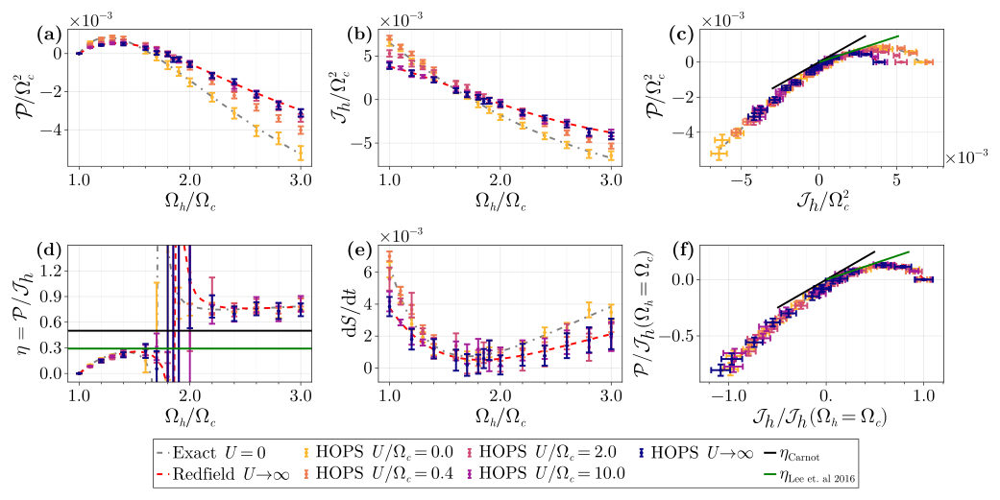
<figcaption class="paper-figure-caption"><b>Fig 4.</b> FIG. 4. Thermodynamic quantities of the thermal machine at low temperatures. (a) Power P (Eq. (59) for HOPS, Eq. (48) for Redfield and Exact method) is positive in the heat engine regime and negative in refrigerator regime. The stalling point 𝜆stall increases with 𝑈. The value of Ωℎ/Ω𝑐where maximum power is produced also increases. (b) Heat current from hot bath Jℎ(Eq. (60) for HOPS, Eq. (49) for Redfield and Exact method) decreases monotonically with increasing Ωℎ/Ω𝑐. (c) Power P against heat current Jℎshows that increasing 𝑈decreases the magnitudes of thermodynamic quantities. (d) Efficiency 𝜂(Eq. (51)) increases with Ωℎ/Ω𝑐in the heat engine regime, but diverges near 𝜆stall. Observe that...</figcaption>
</figure>
<figure class="paper-figure-card">
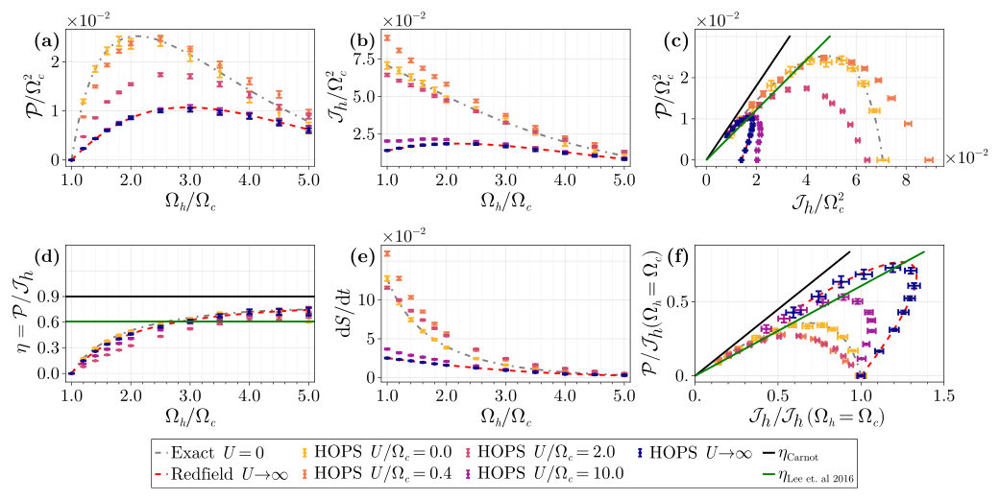
<figcaption class="paper-figure-caption"><b>Fig 5.</b> FIG. 5. Thermodynamic quantities of the thermal machine at high temperatures. (a) Power P (Eq. (59) for HOPS, Eq. (48) for Redfield and Exact method) is always positive, and the refrigerator regime vanishes. The value of Ωℎ/Ω𝑐where maximum power is produced increases with 𝑈. (b) Heat current from hot bath Jℎ(Eq. (60) for HOPS, Eq. (49) for Redfield and Exact method) does not decrease monotonically with increasing Ωℎ/Ω𝑐for high interaction strengths 𝑈. (c) Power P against heat current Jℎshows that increasing 𝑈decreases the magnitudes of thermodynamic quantities. (d) Efficiency 𝜂(Eq. (51)) increases with Ωℎ/Ω𝑐in the heat engine regime. We observe some difference among the efficiencies for...</figcaption>
</figure>
</div>

<p><strong>Summary.</strong> This paper analyzes quantum thermal machines by studying how on-site interactions modify key transport properties like efficiency and rectification. By comparing results from multiple master equation formalisms against an exact stochastic method (HOPS), the authors demonstrate that interactions enable novel functionalities, such as tunable efficiency and non-reciprocal heat flow.</p>
<p><strong>Why it may be interesting.</strong> This work is highly relevant as it tackles the fundamental problem of modeling open quantum systems where multiple theoretical approximations (LME, GME, RME) exist. The use of HOPS provides a powerful, numerically exact tool to validate predictions in complex non-equilibrium regimes.</p>
<details>
<summary>Detailed structure</summary>
<p><strong>Main problem.</strong> The study investigates how on-site interactions affect the efficiency, rectification, and entanglement properties of continuous quantum thermal machines.</p>
<p><strong>Main result.</strong> Interactions can tune the machine's efficiency at high temperatures while leaving it robustly unchanged at low temperatures, and they are necessary to induce non-reciprocal transport and steady-state entanglement.</p>
<p><strong>Method.</strong> The authors compare results derived from multiple theoretical frameworks—including Redfield, Local, and Global Master Equations—against exact stochastic methods like HOPS.</p>
<p><strong>Model / system.</strong> The model is a continuous quantum thermal machine consisting of two coupled oscillators (sites) connected to two distinct thermal reservoirs (hot and cold). The system Hamiltonian includes an on-site interaction term ($U$).</p>
<p><strong>Key observables.</strong> Efficiency ($\eta$), rectification ratio ($R$), steady-state entanglement (Log-negativity $\mathcal{E}_N$), heat currents, and particle currents.</p>
<p><strong>Important parameters / regimes.</strong> On-site interaction strength ($U$), reservoir coupling strengths ($\kappa_\ell$), temperature ratios ($T_h/T_c$), and system frequencies ($\Omega_\ell$).</p>
<p><strong>Assumptions / limitations.</strong> The analysis relies on the weak system-reservoir coupling regime for master equation derivations, though HOPS extends applicability. Comparisons are made between different approximations (LME vs GME).</p>
<p><strong>Figures summary.</strong> Figures compare steady-state populations and fidelity across LME, GME, RME, and Exact methods; other figures show the dependence of power, heat currents, rectification ratio, and entanglement on temperature and interaction strength.</p>
<p><strong>Paper structure.</strong> The paper systematically compares various theoretical descriptions (LME, GME, RME) for open quantum systems dynamics. It then applies these tools to analyze thermodynamic quantities like efficiency and current flow, demonstrating the role of interactions in enhancing non-equilibrium features like rectification and entanglement.</p>
</details>
<details>
<summary>Abstract</summary>
<p>Advances in experimental techniques have opened new routes for harnessing non-equilibrium dynamics in mesoscopic quantum systems. In this context, we study the impact of on-site interactions on the transport properties of a continuous quantum thermal machine composed of two coupled oscillators connected to two thermal reservoirs. In the weak system-reservoir coupling regime, where a long-standing debate concerns which reduced description should be preferred, we first show that the Redfield master equation (RME) provides an accurate and unifying framework that interpolates between two well-known limits: the \textit{local} and \textit{global} master equations. By relying on the Hierarchy of Pure States (HOPS), a numerically exact stochastic method, we then explore the full parameter space and show that interactions can be leveraged to tune the efficiency of the thermal machine at high temperatures (while leaving it essentially unchanged at low temperatures), induce non-reciprocal transport under asymmetric reservoir couplings, and generate steady-state entanglement within the junction. We derive expressions for system-bath correlators, such as heat and particle currents, consistently across different frameworks. Our work features on-site interactions to enhance the versatility of quantum thermodynamic junctions and clarifies the role of non-Markovianity and non-linearities in quantum transport.</p>
</details>
<p><sub><a href="#top">↑ back to top</a></sub></p>

<p><a id="paper-2606.14526"></a></p>
<h3 id="dissipation-induced-superradiance-in-matter-coupled-to-a-self-interacting-cavity"><a href="http://arxiv.org/abs/2606.14526v1">Dissipation-induced superradiance in matter coupled to a self-interacting cavity</a></h3>
<p><strong>Authors:</strong> Sebastian Schmid, Matteo Soriente, Oded Zilberberg, Javier del Pino<br>
<strong>Type:</strong> theory · <strong>Category:</strong> other · <strong>PDF:</strong> <a href="https://arxiv.org/pdf/2606.14526v1">https://arxiv.org/pdf/2606.14526v1</a><br>
<strong>Analysis basis:</strong> full PDF text, analyzed in chunks
<strong>Topic relevance:</strong> 🔥 <code>Dicke superradiance</code> <strong>5/5</strong> · 🔥 <code>driven-dissipative phase transition</code> <strong>4/5</strong> · 🔥 <code>superradiant laser</code> <strong>4/5</strong> · <code>Tavis-Cummings &amp; cavity-many-emitter</code> <strong>3/5</strong> · <code>correlated cavity matter</code> <strong>3/5</strong> · <code>methods for driven-dissipative</code> <strong>3/5</strong> · <code>Keldysh / 2PI / non-Gaussian methods</code> <strong>2/5</strong> · <code>analog quantum simulation</code> <strong>2/5</strong> · <code>correlated / nonlocal dissipation</code> <strong>2/5</strong> · <code>non-equilibrium universality</code> <strong>2/5</strong> · <code>entanglement &amp; information structure</code> <strong>1/5</strong> · <code>exotic spin models in light-matter</code> <strong>1/5</strong> · <code>non-equilibrium dynamics</code> <strong>1/5</strong></p>
<div class="figure-strip-hint">↔ Scroll figures horizontally</div>
<div class="paper-figures-scroll">
<figure class="paper-figure-card">
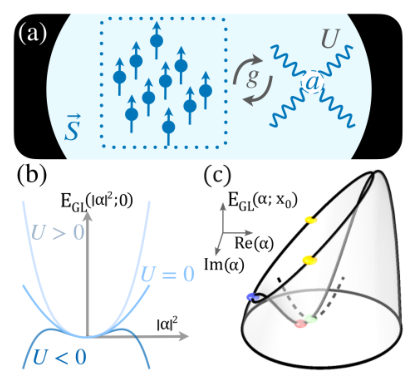
<figcaption class="paper-figure-caption"><b>Fig 1.</b> FIG. 1. System. (a) Kerr-Dicke model [cf. Eq. (1)]: N two- level emitters (blue arrows) couple with strength g to a Kerr cavity with 4-wave mixing strength U. (b) Mean-field cavity potential per emitter, V (α) = ω0|α|2 + U|α|4, for U &gt;, = , &lt; 0 [cf. Eq. (2)], whose |α| dependence gives circular U(1) symmetry in the complex α plane. (c) For U &lt; 0, a spin excitation x0 tilts the potential through x0 Re(α), selecting an axis and reducing U(1) to Z2. The dashed curve shows the reversed-x0 partner. The tilt yields a lower saddle (blue dot), two rim points (yellow dots), and, near the bottom, normal (green) and superradiant (red) Dicke phases.</figcaption>
</figure>
<figure class="paper-figure-card">
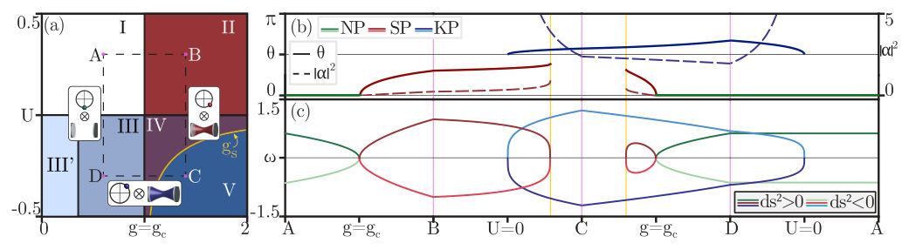
<figcaption class="paper-figure-caption"><b>Fig 2.</b> FIG. 2. Closed system phases. (a) Phase diagram of the closed Kerr-Dicke model (1) versus coupling g and Kerr strength U, with regions I–V. Insets: state ξk, showing one Z2-equivalent spin orientation on the x-z great circle and the cavity state (on/off) for NP, SP, and KP. (b) Order parameters θk (solid) and |αk|2 (dashed), and (c) soft-polariton branch ω [cf. Eqs. (2), (3)], along the dashed cut in (a). Colours denote phases. In (c), dark/light hues encode particle/hole character, ds2 &gt; 0/ &lt; 0 [26, 37]. Subregion III′ lies within region III and is not crossed in (b,c). Other parameters are ω0 = ωz = 1.</figcaption>
</figure>
<figure class="paper-figure-card">
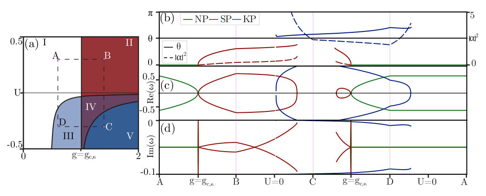
<figcaption class="paper-figure-caption"><b>Fig 3.</b> FIG. 3. Open system phases. (a) Phase diagram of the open Kerr-Dicke model. Regions I and II extend into negative U, with the normal phase stable at low g. Region III shrinks but remains far below gc,κ; dissipation removes the imaginary phase and III′, while region IV retains SP–KP co-stability. (b) Mean-field order parameters along the ABCD cut. (c,d) Real and imaginary parts of the stability-matrix eigenvalues, giving excitation frequencies and damping. The superradiant PT occurs at g = gc,κ. Parameters are as in Fig. 1, with κ = 0.1.</figcaption>
</figure>
<figure class="paper-figure-card">
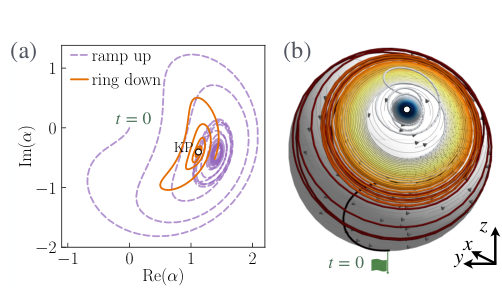
<figcaption class="paper-figure-caption"><b>Fig 4.</b> FIG. 4. Preparation of the Kerr-radiant phase (KP). The cavity is driven from α = 0, z = −1/2 into the targeted KP using ζ = 20, TP ulse = 90, g = 0.8gc,κ, and U = −0.45 [re- gion III in Fig. 3(a)]. The ramp (purple) is followed by free relaxation under Eq. (4) (orange). (a) Cavity quadratures. (b) Spin projection on the Bloch sphere, with colors interpo- lating from purple to orange.</figcaption>
</figure>
<figure class="paper-figure-card">
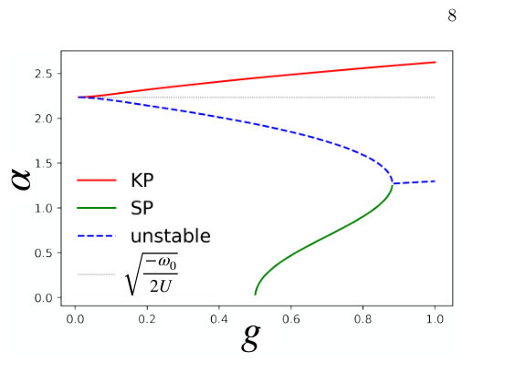
<figcaption class="paper-figure-caption"><b>Fig 5.</b> FIG. 5. Closed-system cavity occupation α for all physical mean-field solutions at U = −0.3. The SP terminates at large g when it merges with an unstable saddle solution. The dashed line, α = p</figcaption>
</figure>
</div>

<p><strong>Summary.</strong> The paper analyzes superradiance in a Kerr-Dicke model where light self-interacts. By introducing negative nonlinearity and accounting for cavity dissipation, the authors predict a stable 'Kerr-radiant phase' that lowers the threshold for lasing compared to standard models. The analysis relies heavily on mean-field theory and stability analysis of open quantum systems.</p>
<p><strong>Why it may be interesting.</strong> This work extends standard cavity QED models by incorporating nonlinear photon interactions, providing a detailed theoretical framework for understanding dissipation-assisted quantum phase transitions in open systems.</p>
<details>
<summary>Detailed structure</summary>
<p><strong>Main problem.</strong> The study investigates finding a low-threshold route to superradiance in light-matter systems by incorporating self-interaction (Kerr nonlinearity) into the standard Dicke model.</p>
<p><strong>Main result.</strong> Negative Kerr nonlinearity ($U<0$) stabilizes a novel 'Kerr-radiant phase' (KP) via cavity dissipation, allowing for lasing thresholds below those predicted by the conventional superradiant transition.</p>
<p><strong>Method.</strong> The analysis employs mean-field theory, analyzing the Ginzburg-Landau potential and performing stability analyses on the resulting coupled differential equations derived from the Lindblad master equation.</p>
<p><strong>Model / system.</strong> The system is a Kerr-Dicke model: $N$ two-level emitters coupled to a single-mode cavity with a photonic Kerr nonlinearity ($U$). The dynamics are governed by an open quantum system approach using the Lindblad master equation.</p>
<p><strong>Key observables.</strong> Order parameters ($\langle S_x 
angle/N, \langle S_z 
angle/N, \langle a 
angle/\sqrt{N}$), excitation spectrum (polariton branches), and stability eigenvalues ($  ext{Re } \lambda_n$).</p>
<p><strong>Important parameters / regimes.</strong> Kerr nonlinearity strength ($U$), light-matter coupling ($g$), cavity dissipation rate ($\kappa$), and system size ($N$).</p>
<p><strong>Assumptions / limitations.</strong> The mean-field approximation ($\langle AB 
angle \approx \langle A 
angle \langle B 
angle$) is used extensively for both closed and open system treatments.</p>
<p><strong>Figures summary.</strong> Figures illustrate the phase diagram showing coexisting NP, SP, and KP regions; they also map initial conditions in cavity phase space to final steady states, demonstrating the robustness of the KP basin.</p>
<p><strong>Paper structure.</strong> The paper progresses from establishing the Kerr-Dicke Hamiltonian and mean-field potential (GL analysis) to analyzing open system dynamics via the Lindblad equation. It then details stability analysis using eigenvalues and concludes by proposing initialization protocols to access the exotic KP phase.</p>
</details>
<details>
<summary>Abstract</summary>
<p>Light-matter interactions are often modeled via the Dicke model, namely, by two-level systems coupled to a cavity mode. Alas, the threshold for superradiance is often experimentally inaccessible or hindered by light's diamagnetic term. Here, within the Dicke setting, we consider self-interacting light in a cavity, modeled by a photonic Kerr nonlinearity. We show that negative Kerr nonlinearity gives rise to a low-threshold superradiant phase with spin inversion. While unstable in a closed system, cavity dissipation stabilizes this lit phase, opening avenues for lasing and bath-engineered phases.</p>
</details>
<p><sub><a href="#top">↑ back to top</a></sub></p>

<p><a id="paper-2606.13779"></a></p>
<h3 id="computational-regimes-in-matrix-product-state-based-quantum-trajectory-simulations"><a href="http://arxiv.org/abs/2606.13779v1">Computational regimes in matrix-product-state-based quantum trajectory simulations</a></h3>
<p><strong>Authors:</strong> Aaron Sander, Simon Cichy, Martin Eigel, Jens Eisert, Maximilian Fröhlich, Tom Peham, Robert Wille<br>
<strong>Type:</strong> theory · <strong>Category:</strong> numerical methods · <strong>PDF:</strong> <a href="https://arxiv.org/pdf/2606.13779v1">https://arxiv.org/pdf/2606.13779v1</a><br>
<strong>Analysis basis:</strong> full PDF text, analyzed in chunks
<strong>Topic relevance:</strong> 🔥 <code>methods for driven-dissipative</code> <strong>5/5</strong> · 🔥 <code>quantum measurements</code> <strong>4/5</strong> · <code>driven-dissipative phase transition</code> <strong>3/5</strong> · <code>correlated / nonlocal dissipation</code> <strong>2/5</strong> · <code>entanglement &amp; information structure</code> <strong>2/5</strong> · <code>non-equilibrium dynamics</code> <strong>2/5</strong> · <code>non-equilibrium universality</code> <strong>2/5</strong> · <code>Keldysh / 2PI / non-Gaussian methods</code> <strong>1/5</strong> · <code>analog quantum simulation</code> <strong>1/5</strong> · <code>measurement-induced transitions</code> <strong>1/5</strong></p>
<div class="figure-strip-hint">↔ Scroll figures horizontally</div>
<div class="paper-figures-scroll">
<figure class="paper-figure-card">
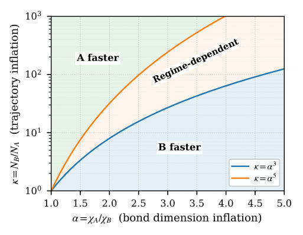
<figcaption class="paper-figure-caption"><b>Fig 1.</b> FIG. 1. Analytical redistribution of computational cost between bond dimension and sampling requirements. Decision geometry in the (α, κ) plane for two physically equivalent unravelings A and B, where α = χA/χB quantifies relative per-trajectory complex- ity and κ = NB/NA quantifies relative sampling cost. The curves κ = α3 and κ = α5 correspond to the decision boundaries in the thread-limited and memory-limited regimes, respectively. Be- low each curve, the reduction in per-trajectory cost associated with smaller bond dimension outweighs the increased number of trajecto- ries; above it, the sampling overhead dominates. Only in the inter- mediate region α3 &lt; κ &lt; α5 does the preferred...</figcaption>
</figure>
<figure class="paper-figure-card">
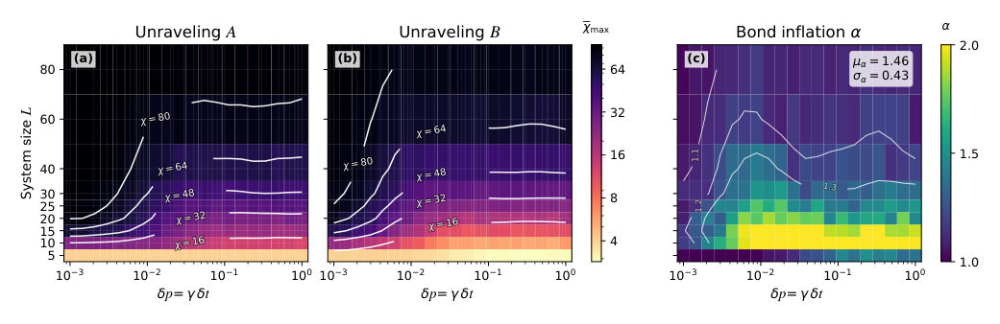
<figcaption class="paper-figure-caption"><b>Fig 2.</b> FIG. 2. Finite-size bond dimension trends in the TJM depolarizing benchmark. (a,b) Peak average trajectory bond dimension χ as a function of system size L and discretized noise parameter δp = γδt for (a) Pauli-jump and (b) measurement-based unravelings. White contours denote constant χmax. (c) Bond inflation ratio α = χmax,A/χmax,B as a function of system size L and δp. Results are obtained for a transverse-field Ising chain initialized in a N´eel state, evolved to T = 5 with δt = 0.1 under local depolarizing noise using the TJM update rule.</figcaption>
</figure>
<figure class="paper-figure-card">
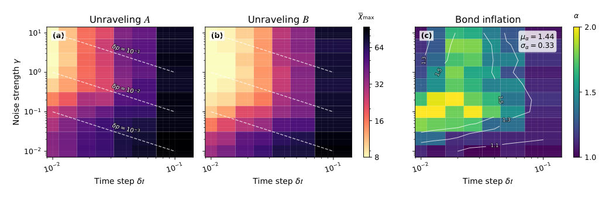
<figcaption class="paper-figure-caption"><b>Fig 3.</b> FIG. 3. Monitoring-resolution dependence of bond dimension in (γ, δt) space. (a,b) Peak trajectory bond dimension χ for L = 65 as a function of noise strength γ and time step δt for unravelings A and B. Dashed lines indicate contours of constant δp = γδt. (c) Bond inflation ratio α = χA/χB as a function of γ and δt. Results are shown up to T = 5 using N = 30 trajectories to characterize systematic bond dimension trends.</figcaption>
</figure>
<figure class="paper-figure-card">
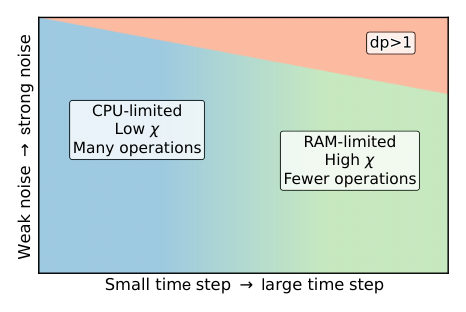
<figcaption class="paper-figure-caption"><b>Fig 4.</b> FIG. 4. Schematic discretization-controlled computational regimes. Conceptual map in (γ, δt) space summarizing the behavior in Fig. 3. For small δt, fine monitoring suppresses trajectory bond dimension χ but increases the number of updates required to reach fixed physical time. For larger δt, bond dimension becomes weakly- dependent on γ and memory usage dominates resource requirements. Boundaries are schematic and indicate smooth crossovers rather than sharp transitions.</figcaption>
</figure>
<figure class="paper-figure-card">
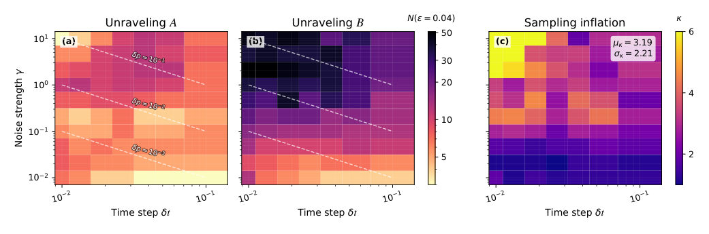
<figcaption class="paper-figure-caption"><b>Fig 5.</b> FIG. 5. Sampling requirements in a small-system exact-reference benchmark. (a,b) Number of trajectories N(ε = 0.04) required for the trajectory-averaged correlator ⟨X4X5⟩to reach a fixed absolute deviation from exact reference evolution, shown as functions of noise strength γ and time step δt for a 10-site system evolved to T = 2. Dashed contours indicate constant δp = γδt. (c) Sampling inflation factor κ = NB/NA, quantifying the relative trajectory count required by unravelings A and B to reach the same reference-accuracy threshold. Because exact evolution is available for this small system, the extracted trajectory counts measure absolute error relative to the Lindblad reference; for...</figcaption>
</figure>
</div>

<p><strong>Summary.</strong> This paper develops a comprehensive cost framework for MPS-based simulations of open quantum systems by analyzing the trade-off between trajectory complexity and statistical sampling effort. It introduces two inflation factors, $\alpha$ and $\kappa$, to quantify how different mathematical representations (unravelings) affect computational cost. The key finding is that the optimal simulation strategy depends critically on the specific hardware resources available, not just the physics of the noise.</p>
<p><strong>Why it may be interesting.</strong> This work provides crucial practical guidelines for simulating realistic open quantum systems on near-term noisy hardware, moving beyond simple entanglement measures to account for resource limitations like memory bandwidth and parallel processing capability.</p>
<details>
<summary>Detailed structure</summary>
<p><strong>Main problem.</strong> The total computational cost of simulating open quantum systems using MPS-based stochastic trajectories depends on a complex interplay between per-trajectory complexity (entanglement) and statistical sampling effort, which is poorly understood.</p>
<p><strong>Main result.</strong> The choice of physically equivalent stochastic unraveling is not an intrinsic optimization but rather a hardware-aware design problem, determined by dimensionless inflation factors $(\alpha, \kappa)$ relative to available memory and parallelism.</p>
<p><strong>Method.</strong> The authors introduce a cost-resolved framework that decomposes total simulation cost into three components: per-trajectory memory, runtime, and sampling effort. They quantify the trade-off using two inflation factors, $\alpha$ (bond dimension) and $\kappa$ (sampling size).</p>
<p><strong>Model / system.</strong> The study models open quantum systems whose evolution is governed by Lindblad master equations. Simulations are performed on 1D systems using Matrix Product States (MPS) techniques.</p>
<p><strong>Key observables.</strong> Bond inflation factor ($\alpha$), sampling inflation factor ($\kappa$), total wall time ratios ($T_A/T_B$), and the peak average trajectory bond dimension ($\chi$).</p>
<p><strong>Important parameters / regimes.</strong> Noise strength, time-step resolution ($\delta t$), system size ($L$), available parallelism ($P$), and physical memory ($M$).</p>
<p><strong>Assumptions / limitations.</strong> The analysis assumes that total cost can be separated into distinct channels (memory, runtime, sampling) and models the resource constraints using specific scaling laws for finite parallelism.</p>
<p><strong>Figures summary.</strong> Figures map out decision geometries in planes of hardware resources $(M, P)$ or $(\alpha, \kappa)$, showing which unraveling is computationally favored under different noise conditions.</p>
<p><strong>Paper structure.</strong> The paper establishes the need for cost analysis in trajectory simulations, develops a resource-accounting framework using $\alpha$ and $\kappa$, benchmarks this framework across various noise channels, and concludes by mapping out hardware-aware decision maps to guide simulation design.</p>
</details>
<details>
<summary>Abstract</summary>
<p>Efficient simulation of open quantum systems is central to modeling noisy quantum hardware and many-body dynamics. In trajectory-based tensor network methods, cost is often associated with trajectory-level quantities such as entanglement growth or bond dimension. However, the total cost of a fixed-accuracy simulation also depends on statistical sampling, and the interplay between per-trajectory complexity and sampling effort remains poorly understood. Here we introduce a cost-resolved framework for matrix product state (MPS)-based quantum trajectory simulations that decomposes total cost into memory per trajectory, runtime per trajectory, and sampling effort. We show that physically equivalent stochastic unravelings of the same Lindblad dynamics do not necessarily reduce total cost, but instead redistribute cost between trajectory complexity and statistical convergence. This trade-off is quantified by two dimensionless inflation factors: a bond dimension inflation $α$ and a sampling inflation $κ$, which together determine the preferred unraveling under hardware-dependent memory and parallelism constraints. We provide a practical protocol for extracting $(α,κ)$ from modest pilot simulations and demonstrate it using benchmarks across multiple noise channels. The resulting decision maps show that the computationally favorable unraveling can change with noise strength, time-step resolution, system size, and available parallelism. These results establish unraveling choice as a hardware-aware simulation design problem rather than an intrinsic optimization of trajectory entanglement alone.</p>
</details>
<p><sub><a href="#top">↑ back to top</a></sub></p>

<p><a id="paper-2606.13975"></a></p>
<h3 id="implementation-of-two-qubit-rydberg-operations-on-neutral-rb-87-atoms-in-systems-with-different-intermediate-states"><a href="http://arxiv.org/abs/2606.13975v1">Implementation of two-qubit Rydberg operations on neutral Rb-87 atoms in systems with different intermediate states</a></h3>
<p><strong>Authors:</strong> I. V. Iukhnovets, O. V. Bychkova, I. B. Bobrov, A. P. Gordeev, M. Y. Goloshchapov, G. I. Struchalin, S. S. Straupe<br>
<strong>Type:</strong> experiment · <strong>Category:</strong> other · <strong>PDF:</strong> <a href="https://arxiv.org/pdf/2606.13975v1">https://arxiv.org/pdf/2606.13975v1</a><br>
<strong>Analysis basis:</strong> full PDF text, analyzed in chunks
<strong>Topic relevance:</strong> 🔥 <code>QC/QI experiment</code> <strong>5/5</strong> · 🔥 <code>Rydberg arrays</code> <strong>4/5</strong> · <code>quantum measurements</code> <strong>1/5</strong> · <code>quantum optics experiment</code> <strong>1/5</strong></p>
<div class="figure-strip-hint">↔ Scroll figures horizontally</div>
<div class="paper-figures-scroll">
<figure class="paper-figure-card">
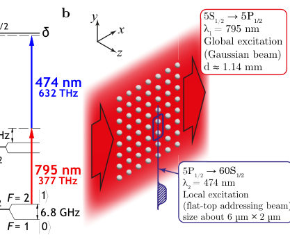
<figcaption class="paper-figure-caption"><b>Fig 1.</b> FIG. 1. Scheme for implementing excitation through the in- termediate level 5P1/2. (a) Scheme of two-photon excitation to the state |r⟩through the intermediate state |p⟩. (b) Ex- perimental implementation. The beam for the first excitation stage is global and propagates along the OX direction. The beam for the second excitation stage provides site-selective addressing, propagates along OZ, and has a flat-top intensity profile</figcaption>
</figure>
<figure class="paper-figure-card">
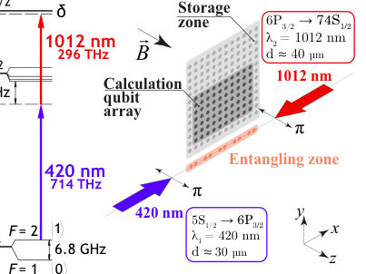
<figcaption class="paper-figure-caption"><b>Fig 2.</b> FIG. 2. Scheme for implementing excitation through the in- termediate level 6P3/2. (a) Scheme of two-photon excitation to a Rydberg state. (b) Experimental implementation. Both beams act on atoms in the entanglement zone. The first-stage beam propagates along the OX axis, and the second-stage beam propagates in the opposite direction</figcaption>
</figure>
<figure class="paper-figure-card">
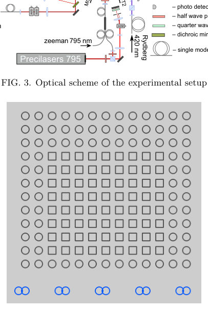
<figcaption class="paper-figure-caption"><b>Fig 3.</b> FIG. 4. Zoned architecture of the atomic array. Black circles show atoms in the reservoir zone, squares show atoms in the computational array. Blue particles in the entanglement zone are shown at the bottom</figcaption>
</figure>
<figure class="paper-figure-card">
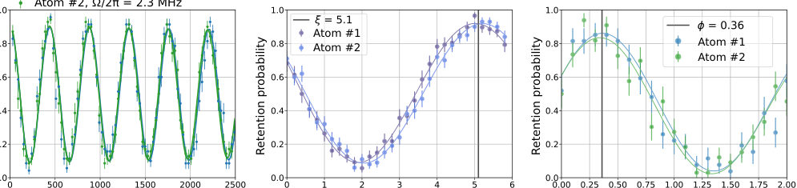
<figcaption class="paper-figure-caption"><b>Fig 4.</b> FIG. 5. (a) Rabi oscillations under single-particle excitation to a Rydberg state for a pair of atoms in paired sites of the computation region. (b) Dependence of the probability of detecting an atom in the ground state after applying a pair of Rydberg excitation pulses on the relative phase between them. The two curves correspond to separate measurements for each atom of the selected pair. (c) Probability of detecting an atom in the ground state as a function of the compensation phase around the quantization axis. The two curves correspond to separate measurements for each atom of the selected pair</figcaption>
</figure>
<figure class="paper-figure-card">
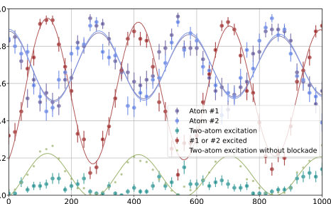
<figcaption class="paper-figure-caption"><b>Fig 5.</b> FIG. 6. Simultaneous excitation of atoms in paired sites of the computation region to a Rydberg state. The red curve is the probability of exciting one atom of the pair, the green curve is the probability of simultaneous Rydberg excitation of two atoms, the olive curve is the conditional probability of single-particle excitation, and the remaining curves are un- conditional probabilities of single-particle excitation</figcaption>
</figure>
</div>

<p><strong>Summary.</strong> The research details the experimental implementation of two-qubit quantum gates on $^{87}	ext{Rb}$ atoms by comparing two distinct Rydberg excitation schemes. The authors demonstrate that using a $6P_{3/2}$ intermediate level, coupled with a zoned architecture, yields high fidelity (94%) because it circumvents difficult beam focusing requirements inherent in alternative setups.</p>
<p><strong>Why it may be interesting.</strong> This work provides a detailed comparison of physical implementations for quantum gates in neutral atoms, directly addressing practical engineering challenges (like beam focusing and intermediate state selection) that limit fidelity in current quantum hardware.</p>
<details>
<summary>Detailed structure</summary>
<p><strong>Main problem.</strong> The central goal is to experimentally implement high-fidelity two-qubit quantum gates on neutral Rubidium-87 atoms.</p>
<p><strong>Main result.</strong> The authors successfully demonstrated a two-qubit operation fidelity of 94% using the $6P_{3/2}$ intermediate state scheme, which was shown to be superior to an alternative scheme involving the $5P_{1/2}$ level.</p>
<p><strong>Method.</strong> They utilized Rydberg blockade physics and implemented the Controlled-Z (CZ) gate via precise laser pulsing sequences following the Levine–Pichler method.</p>
<p><strong>Model / system.</strong> The system uses neutral $^{87}	ext{Rb}$ atoms trapped in optical tweezers, with qubits encoded in hyperfine ground states. Two schemes are compared: one using $5P_{1/2}$ and another using $6P_{3/2}$ as the intermediate excitation level.</p>
<p><strong>Key observables.</strong> Two-qubit operation fidelity ($F$), measured via parity measurements on entangled states like $|\Phi^+
angle$.</p>
<p><strong>Important parameters / regimes.</strong> The choice of intermediate level, spatial configuration (zone separation), and laser parameters ($\lambda=420 	ext{ nm}$, $\lambda_2=1012 	ext{ nm}$).</p>
<p><strong>Assumptions / limitations.</strong> Numerical modeling suggests that the spatial configuration has a greater impact on fidelity than the specific choice of intermediate level. The $6P_{3/2}$ scheme is favored due to technological ease in generating high power at $1012 	ext{ nm}$.</p>
<p><strong>Figures summary.</strong> Figures illustrate the optical schemes for both excitation pathways (Scheme A and Scheme B) and show experimental sequences used to measure CZ gate fidelity and parity oscillations.</p>
<p><strong>Paper structure.</strong> The paper compares two Rydberg excitation schemes ($5P_{1/2}$ vs $6P_{3/2}$) theoretically, analyzes their limitations based on scattering rates and beam profiles, presents numerical modeling results emphasizing spatial dependence, and concludes with the experimental demonstration of the higher-fidelity scheme using $6P_{3/2}$.</p>
</details>
<details>
<summary>Abstract</summary>
<p>This work presents an experimental setup for implementing two-qubit operations on neutral atoms ($^{87}$Rb) with the possibility of using two different Rydberg excitation schemes. One of them uses 5P$_{1/2}$ as the intermediate level and applies the second-stage beam locally to the addressed atoms. The second scheme uses the 6P$_{3/2}$ level; in this scheme, the particles to be entangled are moved to a separate zone through which both Rydberg beams pass. The advantages and limitations of both schemes are analyzed. Based on numerical modeling performed with a Julia package developed by the authors, it is demonstrated that the spatial configuration has a greater effect on quantum-operation fidelity than the choice of intermediate level. An experimental implementation of the scheme using the 6P$_{3/2}$ level is demonstrated, making it possible to achieve a two-qubit operation fidelity of 94%.</p>
</details>
<p><sub><a href="#top">↑ back to top</a></sub></p>

<p><a id="paper-2606.14352"></a></p>
<h3 id="modeling-light-matter-coupled-systems-with-neural-quantum-states"><a href="http://arxiv.org/abs/2606.14352v1">Modeling light-matter coupled systems with neural quantum states</a></h3>
<p><strong>Authors:</strong> Noe Salmeron, Marin Bukov, Markus Schmitt<br>
<strong>Type:</strong> theory · <strong>Category:</strong> numerical methods · <strong>PDF:</strong> <a href="https://arxiv.org/pdf/2606.14352v1">https://arxiv.org/pdf/2606.14352v1</a><br>
<strong>Analysis basis:</strong> full PDF text, analyzed in chunks
<strong>Topic relevance:</strong> 🔥 <code>Tavis-Cummings &amp; cavity-many-emitter</code> <strong>4/5</strong> · 🔥 <code>analog quantum simulation</code> <strong>4/5</strong> · 🔥 <code>correlated cavity matter</code> <strong>4/5</strong> · <code>Rydberg arrays</code> <strong>3/5</strong> · <code>entanglement &amp; information structure</code> <strong>3/5</strong> · <code>exotic spin models in light-matter</code> <strong>3/5</strong> · <code>methods for driven-dissipative</code> <strong>3/5</strong> · <code>spintronics-quantum-optics interface</code> <strong>3/5</strong> · <code>correlated / nonlocal dissipation</code> <strong>1/5</strong> · <code>driven-dissipative phase transition</code> <strong>1/5</strong> · <code>non-equilibrium dynamics</code> <strong>1/5</strong></p>
<div class="figure-strip-hint">↔ Scroll figures horizontally</div>
<div class="paper-figures-scroll">
<figure class="paper-figure-card">
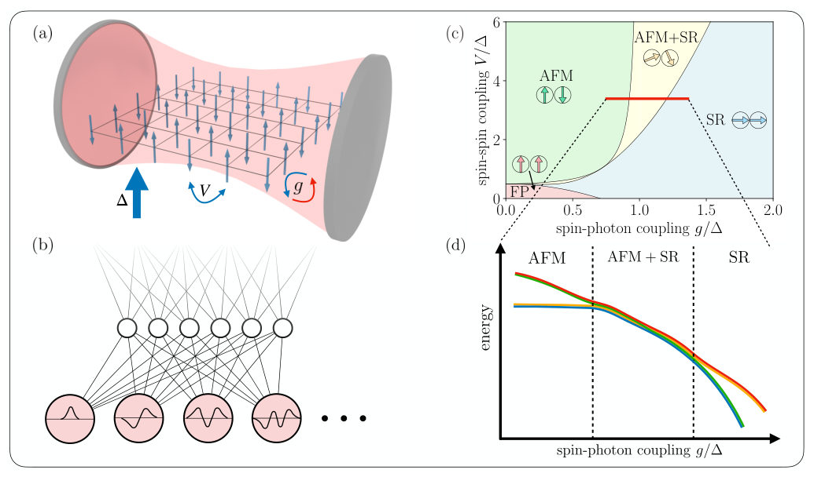
<figcaption class="paper-figure-caption"><b>Fig 1.</b> FIG. 1. (a) 2D array of Rydberg atoms, represented as two-level systems, in a cavity. The atoms on the lattice interact repulsively with their nearest neighbors with strength V . They are additionally uniformly coupled to a single cavity photon mode with interaction strength g. The cavity effectively mediates an all-to-all coupling competing with the nearest-neighbor interaction. An external field with intensity ∆is also present. For electrically neutral Rydberg atoms, this field can take the form of an external periodic drive [1]. (b) We study the ground state properties using Neural Quantum States (NQS) by designing a neural network architecture capable of handling both spin and photon...</figcaption>
</figure>
<figure class="paper-figure-card">
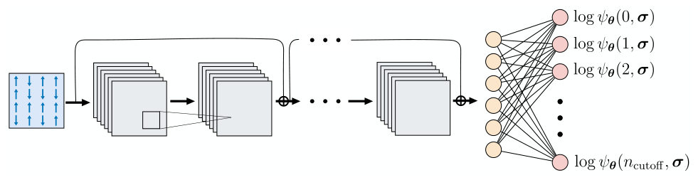
<figcaption class="paper-figure-caption"><b>Fig 2.</b> FIG. 2. Schematic illustration of the neural network architecture. We adapt the ResNet architecture previously used for spin-only systems [24]. A spin configuration is given as input and passes through multiple convolutional layers with residual connections. Our modification occurs at the end of these layers: instead of averaging all feature maps to a single number, we average each one separately to produce an array. These values are then fed into a final dense layer that outputs the log- wavefunction coefficients for each photon number in a multi-head fashion.</figcaption>
</figure>
<figure class="paper-figure-card">
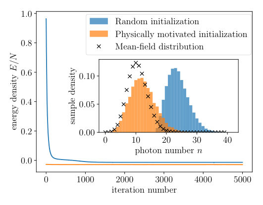
<figcaption class="paper-figure-caption"><b>Fig 3.</b> FIG. 3. Comparison of the training curves between a state initialized with random weights and a state initialized as the ground state of the simplified Hamiltonian of Eq. (6). The physically motivated initialization reaches lower energies, il- lustrating the advantage of starting the optimization from a state closer to the ground state. The value chosen for the parameter α of the modified Hamiltonian in Eq. 6 is the av- erage photon number of the mean-field ground state. The inset shows the photon distributions of each state at the end of the optimization. This illustrates how the improvement in energy can translate into significantly different values for the observables, such as the...</figcaption>
</figure>
<figure class="paper-figure-card">
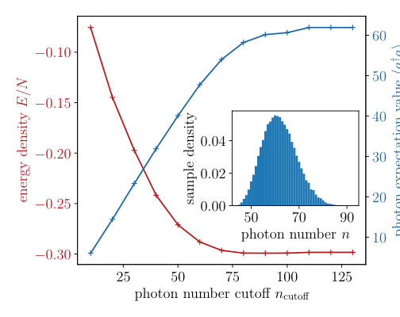
<figcaption class="paper-figure-caption"><b>Fig 4.</b> FIG. 4. Scaling of the average photon number ⟨a†a⟩and the energy density as the photon cutoff is increased. The cutoff must be chosen so that, if it is increased, the photon number in the cavity does not change. The inset shows the photon distribution of the ground state at this point. This example is for a 12 × 12 lattice at g/∆= 1.5 and V/∆= 6. The error bars on the main graph are too small to be visible.</figcaption>
</figure>
<figure class="paper-figure-card">
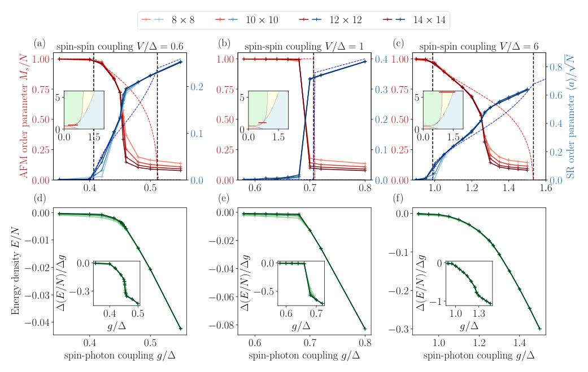
<figcaption class="paper-figure-caption"><b>Fig 5.</b> FIG. 5. (a-c) AFM and SR order parameters showcasing the different phase transitions for various cuts through the phase diagram at V = 0.6, V = 1, and V = 6. The dashed red and blue curves represent the mean-field predictions for the two quantities. The black dashed vertical lines show the position of the phase transitions according to mean-field. (d-f) The second row shows the corresponding energy densities and their derivative with respect to g/∆. In the thermodynamic limit, a first order phase transition is characterized by a kink in the energy density and a discontinuity in its derivative. The error bars are too small to be visible. Details about the cutoffs chosen for each data point...</figcaption>
</figure>
</div>

<p><strong>Summary.</strong> The paper introduces and validates Neural Quantum States (NQS) as a powerful numerical technique to simulate light-matter coupled quantum systems. It models Rydberg atoms interacting with cavity photons, accurately predicting ground state phase boundaries by capturing crucial spin-photon correlations missed by mean-field theory. This method offers a scalable framework for studying complex strongly correlated physics in hybrid quantum platforms.</p>
<p><strong>Why it may be interesting.</strong> This work represents a significant advancement in simulating strongly correlated quantum systems by providing a scalable, highly accurate numerical tool (NQS) that surpasses the limitations of traditional methods like Mean-Field Theory or Tensor Networks for specific hybrid Hilbert spaces.</p>
<details>
<summary>Detailed structure</summary>
<p><strong>Main problem.</strong> Developing a robust numerical method to study complex many-body quantum systems where short-range interactions coexist with long-range photon-mediated couplings, exceeding the capabilities of mean-field theory.</p>
<p><strong>Main result.</strong> The Neural Quantum State (NQS) approach successfully captures spin-photon and spin-spin correlations, leading to quantitative deviations in predicted ground state phase boundaries compared to mean-field calculations.</p>
<p><strong>Method.</strong> The study employs Neural Quantum States (NQS), utilizing a multi-head ResNet architecture to represent the wavefunction on hybrid Hilbert spaces. A unitary transformation is used to map the system to a stoquastic Hamiltonian, enabling Variational Monte Carlo optimization.</p>
<p><strong>Model / system.</strong> The model is a light-matter coupled system, specifically a 2D lattice of Rydberg atoms interacting with a cavity photon mode (spin-photon coupling). The Hamiltonian includes spin interactions ($H_{	ext{spin}}$), cavity terms ($H_{	ext{cavity}}$), and the interaction term ($H_{	ext{int}}$).</p>
<p><strong>Key observables.</strong> Ground state properties, phase boundaries (FP, AFM, SR phases), Renyi-2 entanglement entropy, and energy expectation values.</p>
<p><strong>Important parameters / regimes.</strong> Coupling strengths ratios like $g/\Delta$ and $V/\Delta$; photon cutoff ($n_{	ext{cutoff}}$); system size ($N$).</p>
<p><strong>Assumptions / limitations.</strong> The method requires truncating the infinite photon degree of freedom at a finite cutoff ($n_{	ext{cutoff}}$) and assumes adiabatic preparation for ground state calculations.</p>
<p><strong>Figures summary.</strong> Figures illustrate phase diagrams showing predicted boundaries, comparison plots between NQS and mean-field results for order parameters (AFM/SR), and convergence diagnostics like energy variance vs. time step or cutoff size.</p>
<p><strong>Paper structure.</strong> The paper progresses by introducing the physical model and Hamiltonian, detailing the necessary unitary transformation to ensure stochasticity, presenting the advanced multi-head ResNet NQS architecture, validating its stability through initialization techniques, and finally applying it to map out phase diagrams and quantify correlation effects beyond mean-field theory.</p>
</details>
<details>
<summary>Abstract</summary>
<p>Recent advances in cold atom manipulation enable the study of many-body systems where short-range interactions between neighboring atoms coexist with long-range interactions mediated by photons. Such a combination of interactions makes a theoretical approach challenging beyond mean-field methods. In this work, we develop a neural quantum state based approach to study these systems numerically. We introduce a neural-network architecture capable of handling hybrid Hilbert spaces with large local bosonic dimensions in strongly interacting spin-photon systems. We benchmark this approach on a model of a two-dimensional lattice of Rydberg atoms coupled to a photon mode. The superradiant ground states found in the large spin-photon coupling regime allow us to demonstrate the efficiency of the method in the presence of high photon occupation. Furthermore, the ability to capture spin-spin and spin-photon correlations leads us to observe quantitative deviations in the ground state phase boundaries with respect to mean-field theory. The method extends to other systems with a similar hybrid Hilbert space structure, such as spin-phonon systems, and provides a scalable framework for investigating their ground state properties.</p>
</details>
<p><sub><a href="#top">↑ back to top</a></sub></p>

<p><a id="paper-2606.14177"></a></p>
<h3 id="dynamically-frozen-long-distance-entanglement-via-non-hermitian-pt-symmetric-systems"><a href="http://arxiv.org/abs/2606.14177v1">Dynamically frozen long-distance entanglement via non-Hermitian PT-symmetric systems</a></h3>
<p><strong>Authors:</strong> Sejal Ahuja, Keshav Das Agarwal, Aditi Sen De<br>
<strong>Type:</strong> theory · <strong>Category:</strong> quantum information and computing · <strong>PDF:</strong> <a href="https://arxiv.org/pdf/2606.14177v1">https://arxiv.org/pdf/2606.14177v1</a><br>
<strong>Analysis basis:</strong> full PDF text, analyzed in chunks
<strong>Topic relevance:</strong> 🔥 <code>driven-dissipative phase transition</code> <strong>4/5</strong> · 🔥 <code>entanglement &amp; information structure</code> <strong>4/5</strong> · <code>analog quantum simulation</code> <strong>3/5</strong> · <code>correlated / nonlocal dissipation</code> <strong>3/5</strong> · <code>methods for driven-dissipative</code> <strong>3/5</strong> · <code>non-equilibrium dynamics</code> <strong>3/5</strong> · <code>non-equilibrium universality</code> <strong>3/5</strong> · <code>Keldysh / 2PI / non-Gaussian methods</code> <strong>1/5</strong> · <code>Kondo &amp; dissipative impurity</code> <strong>1/5</strong> · <code>exotic spin models in light-matter</code> <strong>1/5</strong> · <code>scars &amp; prethermalization</code> <strong>1/5</strong></p>
<div class="figure-strip-hint">↔ Scroll figures horizontally</div>
<div class="paper-figures-scroll">
<figure class="paper-figure-card">
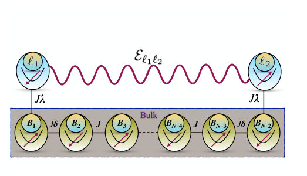
<figcaption class="paper-figure-caption"><b>Fig 1.</b> FIG. 1. Schematic of the LDE generation protocol when all the sites are influenced by the environment. The spin chain is com- posed of two components: bulk (B1, B2, · · · , BN−2) interacting weakly with the two link spins (ℓ1, ℓN) situated at the ends of the bulk. In our case, the interactions in bulk spins are described by the SSH model (see Eq. (1)), and the weak interactions between link- bulk spin pairs (ℓ1, B1) and (BN−2, ℓ2) are represented by λ ≪1. Each spin is attached to a local bath, where continuous measurements are performed in opposite directions to obtain an effective Hamilto- nian of an imaginary alternating magnetic field. The protocol aims to create near-maximal...</figcaption>
</figure>
<figure class="paper-figure-card">
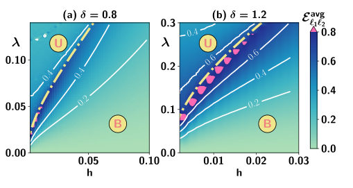
<figcaption class="paper-figure-caption"><b>Fig 2.</b> FIG. 3. Time-averaged entanglement between the links Eavg ℓ1ℓ2: Exceptional points are special. Time-averaged LDE Eavg ℓ1ℓ2 of the SSH model in the parameter space (h, λ) (abscissa, ordinate) for (a) δ = 0.8 and (b) δ = 1.2, with N = 16. The exceptional points are represented by dashed-dot lines, which segregate the unbroken (U) and broken (B) phases. High LDE (&gt; 0.8) (pink colored regions) can be obtained near the exceptional lines of the model, especially for δ ≥1 (see Theorem 2, for δ = 1). The initial state of the bulk and link system is |Ψ(0)⟩= |1⟩. All the axes are dimensionless.</figcaption>
</figure>
<figure class="paper-figure-card">
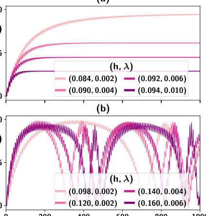
<figcaption class="paper-figure-caption"><b>Fig 3.</b> FIG. 2. Comparison between long-distance entanglement Eℓ1ℓ2 of unbroken and broken regimes of the non-Hermitian SSH model. Eℓ1ℓ2 (ordinate) vs time (abscissa) for δ = 1.2 where (a) belongs to the broken regime and (b) to unbroken regime. The model fa- cilitates long-distance entanglement creation in both regimes, with frozen entangled links in the broken regimes for a long period of time (a). However, the entanglement in the unbroken regime fluctu- ates, and the freezing periods are shorter. The system is initialized as |Ψ(0)⟩= |1⟩⊗|0⟩⊗N−1 with the system-size N = 16. All the axes are dimensionless.</figcaption>
</figure>
<figure class="paper-figure-card">
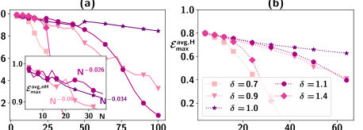
<figcaption class="paper-figure-caption"><b>Fig 4.</b> FIG. 4. Scaling of LDE with system-size: Comparison between non-Hermitian and Hermitian LDE generation. The entangle- ment Eavg,X max (ordinate), averaged over time and maximized over the (h, λ)-plane with respect to the system-size N (abscissa) for (a) non- Hermitian (X=nH) and (b) the Hermitian (X=H) models. Different lines denote different δ values of the SSH model. Eavg,X max decays slowly when δ ≈1, whereas the LDE decays quickly with system- size N when δ ̸= 1 and high N, highlighting the significance of XX model. (Inset) When entanglement is close to unity (Eavg,nH max &lt; 0.9), the scaling exponents are found for δ = 0.9, 1.0 and 1.1. All the axes are dimensionless.</figcaption>
</figure>
<figure class="paper-figure-card">
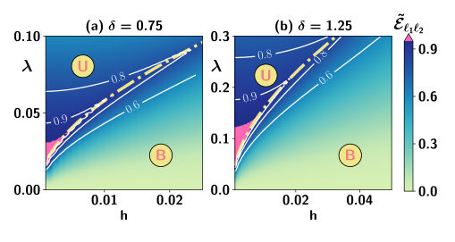
<figcaption class="paper-figure-caption"><b>Fig 5.</b> FIG. 6. Long-distance entangled links in a stationary state. The variation of entanglement between the links ˜Eℓ1ℓ2 in the (h, λ)- plane is presented when the system reaches the stationary state for (a) δ = 0.75 and (b) δ = 1.25, with system-size N = 10. The broken (B) and unbroken (U) regimes are separated by the dashed-dot lines. High entanglement between the links (ℓ1, ℓ2) is produced close to the exceptional line with pink colored regions indicating ˜Eℓ1ℓ2 ≥0.95. All the axes are dimensionless.</figcaption>
</figure>
</div>

<p><strong>Summary.</strong> This paper demonstrates that incorporating non-Hermititian physics into spin chain models can dramatically enhance the generation and stabilization of long-distance entanglement in quantum networks. By analyzing dynamics near exceptional points, the authors show that these engineered systems achieve higher, more robust levels of entanglement than their Hermitian counterparts.</p>
<p><strong>Why it may be interesting.</strong> This work directly addresses engineered quantum networks using non-Hermitian physics, providing concrete mechanisms (EPs, broken phase) to enhance robust quantum correlations beyond what is possible with standard unitary models.</p>
<details>
<summary>Detailed structure</summary>
<p><strong>Main problem.</strong> The study investigates how non-Hermitian dynamics can dynamically generate and stabilize long-distance entanglement (LDE) between distant nodes in quantum networks, comparing this to standard Hermitian evolution.</p>
<p><strong>Main result.</strong> Non-Hermitian dynamics near exceptional points allow for the emergence of near-unit time-averaged entanglement that cannot be achieved by corresponding Hermitian systems. Furthermore, LDE persists robustly even in the stationary regime.</p>
<p><strong>Method.</strong> The analysis combines analytical techniques (like determining exceptional points) with numerical simulations to track entanglement evolution over time and across parameter space.</p>
<p><strong>Model / system.</strong> The system is modeled as interacting spin-1/2 bulks weakly coupled to two quantum links, analyzed using an effective non-Hermitian nearest-neighbor Su-Schrieffer-Heeger (SSH) model derived from open quantum system dynamics.</p>
<p><strong>Key observables.</strong> Long-distance entanglement ($\mathcal{E}_{\ell_1\ell_2}$), time-averaged link entanglement ($E_{	ext{avg}}^{\ell_1\ell_2}$), and the location of exceptional points (EPs).</p>
<p><strong>Important parameters / regimes.</strong> Weak coupling strength ($\lambda$), imaginary magnetic fields ($h'$), system size ($N$), and the SSH model parameter $\delta$.</p>
<p><strong>Assumptions / limitations.</strong> The analysis relies on deriving effective non-Hermitian Hamiltonians from open quantum systems (e.g., via GKLS master equation) and assumes weak coupling regimes for perturbative calculations.</p>
<p><strong>Figures summary.</strong> Figures compare entanglement dynamics in the broken vs. unbroken regimes, show how LDE depends on system size $N$ and interaction range ($\alpha$), and map out high-entanglement regions near exceptional point lines in parameter space.</p>
<p><strong>Paper structure.</strong> The paper systematically analyzes the role of non-Hermiticity by comparing dynamic entanglement generation across different SSH model parameters ($\delta$) and coupling strengths, culminating in a comparison between stationary and time-averaged entanglement results.</p>
</details>
<details>
<summary>Abstract</summary>
<p>In distributed quantum networks, interacting spin systems can mediate the generation of highly entangled links between distant nodes. We investigate the role of effective parity-time (PT)-symmetric non-Hermitian spin-1/2 bulks weakly coupled to two quantum links, obtained due to the environmental interactions affecting both the bulk and the links. Focusing on effective non-Hermitian nearest-neighbor (NN) Su-Schrieffer-Heeger (SSH) models, we analyze how non-Hermiticity influences the dynamical formation of long-distance entanglement (LDE). For a paradigmatic model consisting of a quantum XX bulk subjected to imaginary staggered magnetic fields, we analytically determine the exceptional points arising from the resulting bulk-mediated interactions between the links. Combining analytical and numerical methods, we demonstrate that an initially fully separable state can dynamically evolve into highly entangled link states near these exceptional points in the broken regime. Further, after optimizing over time and system parameters, near-unit time-averaged entanglement between the links emerges under weak imaginary magnetic fields and bulk-link couplings, which cannot be attained in the corresponding Hermitian systems. Moreover, the non-Hermitian dynamics exhibit a freezing of high entanglement in the vicinity of exceptional points, a feature absent in Hermitian counterparts. We also identify regimes of long-range interaction strengths that yield a higher time-averaged entanglement than the corresponding NN models. Furthermore, we establish that LDE persists in the stationary regime, highlighting the promise of engineered non-Hermitian dynamics for realizing robust and frozen entangled links in quantum networks.</p>
</details>
<p><sub><a href="#top">↑ back to top</a></sub></p>

<p><a id="paper-2606.13930"></a></p>
<h3 id="quantum-simulation-of-spin-dependent-electron-transfer-in-a-synthetic-chiral-lattice-with-a-trapped-ion"><a href="http://arxiv.org/abs/2606.13930v1">Quantum Simulation of Spin-Dependent Electron Transfer in a Synthetic Chiral Lattice with a Trapped Ion</a></h3>
<p><strong>Authors:</strong> Yi Li, Chuyuan Chen, Xingyu Zhao, Zihan Xie, Min Jiang, Xinhua Peng, Han Pu, Lyuzhou Ye, Yao Wang, Guozhen Zhang, Yiheng Lin<br>
<strong>Type:</strong> experiment · <strong>Category:</strong> other · <strong>PDF:</strong> <a href="https://arxiv.org/pdf/2606.13930v1">https://arxiv.org/pdf/2606.13930v1</a><br>
<strong>Analysis basis:</strong> full PDF text, analyzed in chunks
<strong>Topic relevance:</strong> 🔥 <code>analog quantum simulation</code> <strong>4/5</strong> · <code>exotic spin models in light-matter</code> <strong>3/5</strong> · <code>methods for driven-dissipative</code> <strong>3/5</strong> · <code>non-equilibrium dynamics</code> <strong>3/5</strong> · <code>spintronics-quantum-optics interface</code> <strong>3/5</strong> · <code>QC/QI experiment</code> <strong>2/5</strong> · <code>driven-dissipative phase transition</code> <strong>2/5</strong> · <code>Keldysh / 2PI / non-Gaussian methods</code> <strong>1/5</strong> · <code>Kondo &amp; dissipative impurity</code> <strong>1/5</strong> · <code>correlated / nonlocal dissipation</code> <strong>1/5</strong> · <code>entanglement &amp; information structure</code> <strong>1/5</strong> · <code>non-equilibrium universality</code> <strong>1/5</strong></p>
<div class="figure-strip-hint">↔ Scroll figures horizontally</div>
<div class="paper-figures-scroll">
<figure class="paper-figure-card">
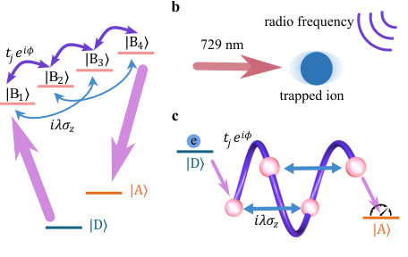
<figcaption class="paper-figure-caption"><b>Fig 1.</b> FIG. 1. Experimental scheme for simulating a donor–chiral bridge–acceptor system with a trapped ion. a, Model of a donor–chiral bridge–acceptor system. The bridge consists of four intermediate states |B1⟩∼|B4⟩ with nearest-neighbor hopping tjeiϕ and spin-dependent next- nearest-neighbor hopping iλσz induced by SOC, with phase ϕ representing the effect of an external magnetic field. The donor |D⟩and acceptor |A⟩are coupled to the bridge via a bosonic mode. b, Implementation of the couplings by 729 nm laser and radio-frequency drives, as detailed in the text. The laser also couples to the vibrational mode serving as the bosonic mode. c, Physical picture of chiral transport through the bridge....</figcaption>
</figure>
<figure class="paper-figure-card">
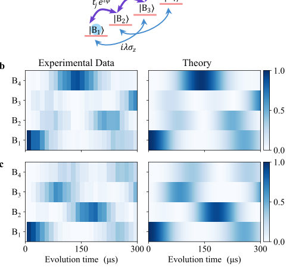
<figcaption class="paper-figure-caption"><b>Fig 2.</b> FIG. 2. Spin-dependent dynamics in the chiral bridge. a, four-site chiral bridge |B1⟩∼|B4⟩with nearest-neighbor hopping tjeiϕ and spin-dependent next-nearest-neighbor hop- ping iλσz, here we set ϕ = 0. b,c Time evolution of site populations measured in the experiment (left) and obtained from numerical simulation considering the nonuniform cou- plings (right), starting from |B1⟩. Each row corresponds to a bridge site. b, Spin-up dynamics. c, Spin-down dynamics. Parameters: λ/t = 1.42, t = 2π × 2.9 kHz.</figcaption>
</figure>
<figure class="paper-figure-card">
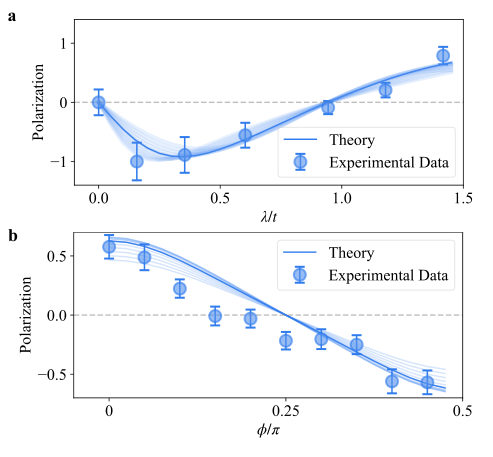
<figcaption class="paper-figure-caption"><b>Fig 3.</b> FIG. 4. Tunable spin polarization induced by the chi- ral bridge. a, Spin polarization as a function of the coupling ratio λ/t, measured at 253 µs. The polarization is negative for λ/t &lt; 1 and reverses sign for λ/t &gt; 1 (ϕ = 0). Theoretical curves are obtained over the time window 200–300 µs, showing consistent behavior within this interval. b, Spin polarization as a function of the magnetic-field–induced hopping phase ϕ at λ/t = 1.4, measured at 250 µs. The polarization changes sign with ϕ and approaches zero near ϕ = π/4. Theoretical curves are obtained over 200–300 µs. Dots (solid blue lines) represent the experiment data (theory). The dashed grey line indicates the boundary between...</figcaption>
</figure>
<figure class="paper-figure-card">
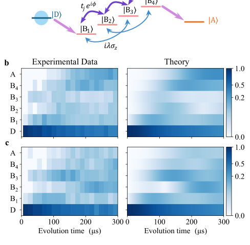
<figcaption class="paper-figure-caption"><b>Fig 4.</b> FIG. 3. Spin-dependent donor–acceptor transport me- diated by the chiral bridge. a, Donor–bridge–acceptor model. An electron initially in |D⟩propagates through the four-site bridge |B1⟩∼|B4⟩and transfers to the acceptor state |A⟩. b,c Time evolution of site populations from ex- periment (left) and numerical simulation considering the re- alistic nonuniform couplings (right), with a distinction on the population at the acceptor state (|A⟩) over time. Each row represents one site. b, Spin-up dynamics. c, Spin-down dy- namics. Parameters: ϕ = 0, λ/t = 1.4, t = 2π × 2.9 kHz, gDB = gBA = 2π × 2.8 kHz.</figcaption>
</figure>
</div>

<p><strong>Summary.</strong> The authors successfully implemented a programmable quantum simulation of spin-dependent electron transfer using a trapped ion platform. They modeled the process through a synthetic chiral lattice bridge connecting donor and acceptor sites. The key finding is that spin selectivity arises from quantum interference between multiple competing pathways, providing a robust experimental route to study CISS effects.</p>
<p><strong>Why it may be interesting.</strong> This work provides an unprecedentedly controllable quantum simulator platform for studying complex solid-state phenomena like CISS. The ability to tune parameters ($\lambda/t$, $\phi$) allows direct mapping of theoretical predictions regarding interference mechanisms onto measurable quantum dynamics, which is highly valuable for AMO research into open quantum systems.</p>
<details>
<summary>Detailed structure</summary>
<p><strong>Main problem.</strong> The study addresses the unresolved microscopic origin of the Chiral-Induced Spin Selectivity (CISS) effect in electron transfer through chiral structures.</p>
<p><strong>Main result.</strong> The research identifies that spin-dependent interference among competing multi-step pathways within the synthetic chiral bridge is the microscopic mechanism responsible for observing spin-selective electron transport.</p>
<p><strong>Method.</strong> A programmable quantum simulation approach was implemented using a single trapped ion to model the donor–chiral bridge–acceptor system dynamics.</p>
<p><strong>Model / system.</strong> The system models $ ext{D}– ext{B}_\chi–    ext{A}$ electron transfer, where the chiral bridge is encoded across four sites ($|	ext{B}_1
angle$ to $|	ext{B}_4
angle$) on a trapped $^{40}	ext{Ca}^+$ ion. The couplings are tunable using laser and RF drives, simulating nearest-neighbor hopping and spin-dependent next-nearest-neighbor interactions.</p>
<p><strong>Key observables.</strong> Spin polarization ($P$), population distribution across bridge sites ($ ext{|B}_2
angle,  ext{|B}_3
angle,  ext{|B}_4
angle$), and the overall donor-to-acceptor transfer dynamics over time.</p>
<p><strong>Important parameters / regimes.</strong> Hopping strengths ($t_j$), SOC strength ($\lambda$), phase ($\phi$), and coupling amplitudes/phases. Key regimes include $\lambda/t$ ratios and specific time windows (e.g., $200–300 \mu	ext{s}$).</p>
<p><strong>Assumptions / limitations.</strong> The analysis assumes coherent evolution over specified time windows, and the mechanism relies on interference terms derived from path summation.</p>
<p><strong>Figures summary.</strong> Figures illustrate the experimental scheme (Hamiltonian structure, laser implementation), show spin-dependent time evolution within the chiral bridge, and demonstrate tunable spin polarization in both the bridge dynamics and the final donor-to-acceptor transfer.</p>
<p><strong>Paper structure.</strong> The paper first establishes the model Hamiltonian for $    ext{D}– ext{B}_\chi–    ext{A}$ on a trapped ion. It then analyzes the intrinsic spin-dependent interference within the chiral bridge, followed by extending this analysis to measure the resulting spin selectivity during the full donor-to-acceptor transfer process.</p>
</details>
<details>
<summary>Abstract</summary>
<p>Electron transfer through chiral structures can exhibit spin asymmetry, known as the chiral-induced spin selectivity effect, whose microscopic origin remains an open question. While path-interference within the chiral moiety has been proposed as a key mechanism, its experimental validation requires precise and versatile tunability of system parameters. Here we implement a programmable quantum simulation of spin-dependent electron transfer in a donor--chiral-bridge--acceptor model using a trapped ion. The bridge is encoded in internal states of the ion with tunable nearest- and next-nearest-neighbor couplings, while donor and acceptor states are coupled via a spectator bosonic motional mode. We observe spin-dependent interference within the bridge, and further reveal spin-dependence in donor-to-acceptor transfer dynamics, controlled by amplitude and phase of the coupling parameter. Our results identify interference among spin-dependent pathways as a microscopic origin of spin-dependent transfer, and open a route toward quantum simulations of complex chiral lattices with multi-level and bosonic degrees of freedom.</p>
</details>
<p><sub><a href="#top">↑ back to top</a></sub></p>

<p><a id="paper-2606.14483"></a></p>
<h3 id="generic-nonlocal-statistics-of-the-stationary-measure-in-conserved-active-systems"><a href="http://arxiv.org/abs/2606.14483v1">Generic nonlocal statistics of the stationary measure in conserved active systems</a></h3>
<p><strong>Authors:</strong> Filippo De Luca, Michael E. Cates, Cesare Nardini<br>
<strong>Type:</strong> theory · <strong>Category:</strong> statistical mechanics · <strong>PDF:</strong> <a href="https://arxiv.org/pdf/2606.14483v1">https://arxiv.org/pdf/2606.14483v1</a><br>
<strong>Analysis basis:</strong> full PDF text, analyzed in chunks
<strong>Topic relevance:</strong> 🔥 <code>non-equilibrium dynamics</code> <strong>4/5</strong> · 🔥 <code>non-equilibrium universality</code> <strong>4/5</strong> · <code>Keldysh / 2PI / non-Gaussian methods</code> <strong>3/5</strong> · <code>correlated / nonlocal dissipation</code> <strong>3/5</strong> · <code>driven-dissipative phase transition</code> <strong>3/5</strong> · <code>methods for driven-dissipative</code> <strong>3/5</strong></p>
<div class="figure-strip-hint">↔ Scroll figures horizontally</div>
<div class="paper-figures-scroll">
<figure class="paper-figure-card">
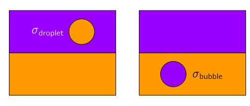
<figcaption class="paper-figure-caption"><b>Fig 1.</b> FIG. 1. In AMB+ at bulk phase coexistence (vapor phase purple, liquid yellow), liquid-droplet in vapor (left) and vapor- bubble in liquid (right) excitations are controlled by different interfacial tensions σdroplet, σbubble [38]. This requires a non- local stationary measure in the low-temperature phase [35– 37]. However, finding the precise character of this nonlocality is intractable.</figcaption>
</figure>
<figure class="paper-figure-card">
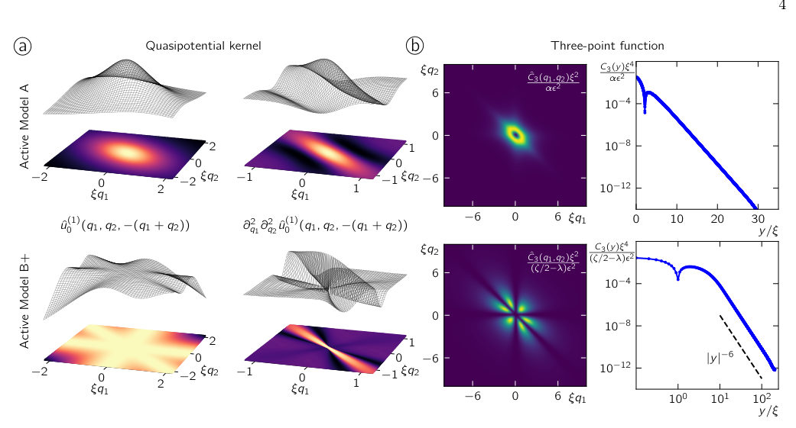
<figcaption class="paper-figure-caption"><b>Fig 2.</b> FIG. 2. Quasipotential kernel and three-point function for the high-temperature phase of AMA (top row) and AMB+ (bottom row) in d = 1. a) Fourier-space quasipotential kernel ˆu(1) 0 (left) and its fourth derivative (right). The kernel is analytic at the origin for AMA, while for AMB+, the fourth derivative does not exist at the origin (β = 4). b) Contribution at order O(α) to the three-point function, related to ˆu(1) 0 via (18). In Fourier space (left), we show ˆC3 defined via ⟨ϕq1ϕq2ϕq3⟩= ˆC3(q1, q2)¯δq1+q2+q3, while in real space (right), C3(y) = |⟨ϕ(0)ϕ(y)ϕ(y)⟩| is shown. For AMA, ˆC3 is analytic at the origin (top left panel), resulting in exponential decay (with decay length set by ξ)...</figcaption>
</figure>
</div>

<p><strong>Summary.</strong> This work develops a perturbative theory to analyze the stationary measure of active systems that violate detailed balance. It shows that such conserved active systems exhibit generic nonlocal statistics, characterized by algebraic decay in correlations, which is fundamentally different from local equilibrium states. The analysis successfully predicts this nonlocality and demonstrates its failure to be captured by standard Landau–Ginzburg expansions.</p>
<p><strong>Why it may be interesting.</strong> The findings provide a rigorous theoretical framework for understanding how broken detailed balance fundamentally alters the statistical description of steady states in active matter, moving beyond equilibrium concepts like free energy minimization.</p>
<details>
<summary>Detailed structure</summary>
<p><strong>Main problem.</strong> The paper characterizes the generic nonlocal statistics of the stationary measure ($P_\infty$) in conserved active systems, contrasting them with local equilibrium measures.</p>
<p><strong>Main result.</strong> In conserved active systems that break detailed balance, the stationary measure is generically nonlocal, leading to algebraic decay in correlation functions. This nonlocality prevents the use of a standard Landau–Ginzburg expansion for $P_\infty$.</p>
<p><strong>Method.</strong> The analysis employs a perturbative expansion in nonlinearity ($\alpha$) around a Gaussian limit, utilizing Large Deviation Theory (LDT) and WKB ansatze to compute the quasipotential ($U = -\epsilon \ln P_\infty$).</p>
<p><strong>Model / system.</strong> The study applies to various active matter models including Active Model A/B+, Nonreciprocal Cahn–Hilliard, and the Toner–Tu model. These systems are characterized by nonlinear dynamics that break detailed balance.</p>
<p><strong>Key observables.</strong> Nonlocality of $P_\infty$, algebraic decay exponents ($eta$) of N-point correlation functions, and the structure of the quasipotential coefficients ($U^{(n)}_r$).</p>
<p><strong>Important parameters / regimes.</strong> Activity nonlinearity parameter ($\alpha$), noise strength ($\epsilon$), and dimensionality ($d$). The analysis focuses on the weak noise limit ($\epsilon 	o 0$).</p>
<p><strong>Assumptions / limitations.</strong> The results are derived perturbatively, assuming small nonlinearities in $\alpha$ and $\epsilon$. The failure of the Landau–Ginzburg expansion is noted as a key limitation.</p>
<p><strong>Figures summary.</strong> Figures illustrate that non-equilibrium features (like different interfacial tensions) require nonlocal $U$, contradicting simple local Gibbs decompositions for active systems.</p>
<p><strong>Paper structure.</strong> The paper builds from establishing the contrast between equilibrium and active systems, developing the perturbative machinery using LDT/WKB ansatz, calculating scaling laws in Fourier space ($\hat{u}^{(n)}_r$), and finally demonstrating how conservation laws enforce nonlocality and cause the failure of standard expansions.</p>
</details>
<details>
<summary>Abstract</summary>
<p>The stationary measure of equilibrium systems with detailed balance follows a Boltzmann distribution, so that for short-ranged interactions the measure is local, meaning that distant spatial domains are statistically independent. In contrast, active systems break detailed balance, and can have nonlocal stationary measure even for fully local dynamics. Here, by expanding in nonlinearity about a Gaussian-model limit, we construct the measure perturbatively deep in the disordered phase for a class of models that includes Active Model A, Active Model B+, Model AB, the Nonreciprocal Cahn--Hilliard model, and the Toner--Tu model. In this regime, nonlocality is linked to a dynamical conservation law. Our results generically preclude construction of a Landau--Ginzburg expansion of the stationary measure (as opposed to the dynamical equations) for conserved active field theories.</p>
</details>
<p><sub><a href="#top">↑ back to top</a></sub></p>

<p><a id="paper-2606.14437"></a></p>
<h3 id="spin-counting-via-projection-noise-measurement-of-mesoscopic-solid-state-spin-ensemble"><a href="http://arxiv.org/abs/2606.14437v1">Spin counting via projection noise measurement of mesoscopic solid-state spin ensemble</a></h3>
<p><strong>Authors:</strong> Lorenzo Bechelli, Konstantin Herb, Laura Alicia Völker, Christian L. Degen<br>
<strong>Type:</strong> experiment · <strong>Category:</strong> other · <strong>PDF:</strong> <a href="https://arxiv.org/pdf/2606.14437v1">https://arxiv.org/pdf/2606.14437v1</a><br>
<strong>Analysis basis:</strong> full PDF text, analyzed in chunks
<strong>Topic relevance:</strong> 🔥 <code>QC/QI experiment</code> <strong>4/5</strong> · 🔥 <code>spintronics-quantum-optics interface</code> <strong>4/5</strong> · <code>quantum measurements</code> <strong>3/5</strong> · <code>quantum optics experiment</code> <strong>3/5</strong> · <code>measurement-induced transitions</code> <strong>2/5</strong> · <code>analog quantum simulation</code> <strong>1/5</strong> · <code>correlated / nonlocal dissipation</code> <strong>1/5</strong> · <code>driven-dissipative phase transition</code> <strong>1/5</strong> · <code>exotic spin models in light-matter</code> <strong>1/5</strong></p>
<div class="figure-strip-hint">↔ Scroll figures horizontally</div>
<div class="paper-figures-scroll">
<figure class="paper-figure-card">
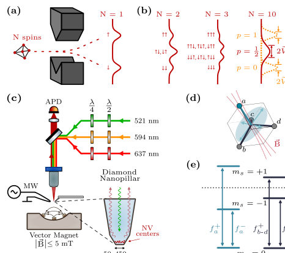
<figcaption class="paper-figure-caption"><b>Fig 1.</b> Figure 1. Concept of the spin counting experiment. (a) Stern- Gerlach-type experiment with a rigid cluster of N indepen- dent spins-1/2 particles. Projective measurement along an axis orthogonal to the spins’ initial direction randomly col- lapses each spin onto either |↑⟩and |↓⟩. (b) For N &gt; 1 the pro- jection assumes a binomial distribution with variance eVproj. The variance is largest at maximum superposition (p = 0.5) and zero for eigenstates (p = 0, 1). Classical readout noise leads to a broadening with variance eVRO. By measuring eVproj, N can be inferred. (c) Experimental setup. A confocal fluo- rescence microscope with three-color laser excitation and po- larization control (λ/2 and...</figcaption>
</figure>
<figure class="paper-figure-card">
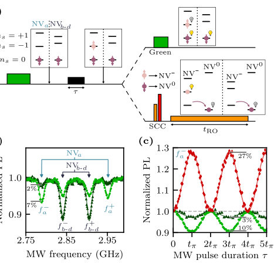
<figcaption class="paper-figure-caption"><b>Fig 2.</b> Figure 2. Orientation-selective excitation and readout. (a) Schematic of the sensing and readout protocols. After green initialization of charge and spin states for all orientations, se- lective microwave manipulation is applied to the aligned NV orientation. Readout is performed either via standard green fluorescence detection (upper path) or via charge state detec- tion using SCC (lower path). Boxes show the population of energy levels for NVa and NVb-d. (b) Pulsed ODMR spectra acquired using standard green readout without polarization control (dark green triangles) and for optimized polarization (light green dots) of the green laser pulse. PL, photolumines- cence. (c) Rabi oscillations...</figcaption>
</figure>
<figure class="paper-figure-card">
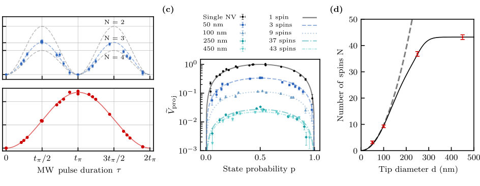
<figcaption class="paper-figure-caption"><b>Fig 3.</b> Figure 3. Spin counting experiment. (a) Projection noise variance as a function of Rabi angle ϕ = πτ/tπ (blue dots) together with the expected projection noise for discrete numbers of spins N (gray). (b) Corresponding normalized PL showing the Rabi oscillation of the spin ensemble. (c) Projection noise variance measured for diamond tips with different apex diameters d (blue shades) as well as for a single NV center (black). For each dataset, the projection noise is fitted with N as the only free parameter (curves). (d) Number of spins N as a function of tip diameter d. The gray dashed line is an estimate for the number of NVa spins based on the implantation density and a conversion...</figcaption>
</figure>
<figure class="paper-figure-card">
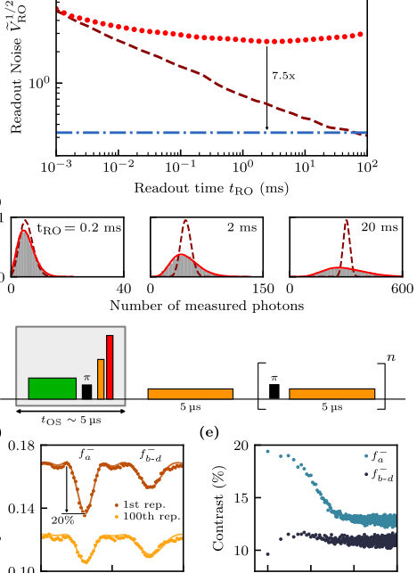
<figcaption class="paper-figure-caption"><b>Fig 4.</b> Figure 4. Standard quantum limit and contrast-enhanced magnetometry. (a) Readout noise eV 1/2 RO as a function of or- ange readout time tRO [cf. Fig. 2a] for an ensemble of N = 9 spins. Dots reflect the experimental data. The dash-dotted line is the SQL (eVproj for N = 9) and the dashed line is the Poissonian limit. (b) Measured photon-count distributions (gray) for three representative tRO. Solid curves are fits to a negative binomial distribution and dashed curves are the expected Poisson distribution. (c) Pulse sequence for orien- tation selection (gray box) followed by an arbitrary pulse se- quence, here the measurement of a pulsed ODMR spectrum. n is the number of repetitions before...</figcaption>
</figure>
</div>

<p><strong>Summary.</strong> The research reports on measuring the quantum projection noise limit in mesoscopic ensembles of NV spin defects at room temperature. By implementing an advanced readout technique combining polarization control and spin-to-charge conversion, they achieved high contrast necessary to perform accurate spin counting up to 43 spins. This demonstrates a powerful, scalable platform for sensitive magnetometry without extreme operating conditions.</p>
<p><strong>Why it may be interesting.</strong> This work bridges quantum optics/measurement theory with solid-state physics by providing a robust, room-temperature method to probe fundamental quantum noise limits (SQL) in a solid-state platform, which is highly relevant for developing practical quantum sensors.</p>
<details>
<summary>Detailed structure</summary>
<p><strong>Main problem.</strong> The primary challenge addressed is measuring quantum projection noise (SQL) in mesoscopic solid-state spin ensembles, which is difficult due to overwhelming classical readout noise compared to atomic systems.</p>
<p><strong>Main result.</strong> The authors successfully demonstrated direct measurement of quantum projection noise and performed spin counting on up to 43 spins at room temperature using NV centers. This protocol maintains high sensitivity without requiring cryogenic cooling or strong bias fields.</p>
<p><strong>Method.</strong> They combine polarization-selective optical excitation with a spin-to-charge conversion (SCC) readout scheme to achieve high ODMR contrast ($>20\%$), enabling the measurement of noise variance ($\epsilon_V(p)$) and subsequent extraction of projection noise.</p>
<p><strong>Model / system.</strong> The system is mesoscopic ensembles of Nitrogen-Vacancy (NV) spin defects in diamond. The analysis involves modeling the total measured photon count variance, which combines fundamental quantum projection noise with measurable readout noise components.</p>
<p><strong>Key observables.</strong> Quantum projection noise variance ($\epsilon_V^{	ext{proj}}$), ODMR contrast, Rabi oscillation decay, and the number of spins ($N$).</p>
<p><strong>Important parameters / regimes.</strong> Room temperature operation; ensemble size up to $\sim 43$ spins; high readout contrast ($>20\%$).</p>
<p><strong>Assumptions / limitations.</strong> The analysis relies on separating the total measured variance into fundamental projection noise and measurable readout noise components, assuming controlled optical excitation.</p>
<p><strong>Figures summary.</strong> Figures illustrate spin counting concepts (Stern-Gerlach analogy), optimized ODMR spectra showing contrast enhancement via polarization control and SCC, Rabi oscillations demonstrating high contrast, and plots comparing measured vs. expected projection noise variance as a function of the driving angle $\phi$.</p>
<p><strong>Paper structure.</strong> The paper progresses from establishing the fundamental difficulty (readout noise) to presenting an advanced readout protocol using NV centers in diamond, demonstrating spin counting capability, quantifying the achieved sensitivity improvement, and finally discussing the broad applicability for magnetometry and sensing.</p>
</details>
<details>
<summary>Abstract</summary>
<p>Quantum projection noise is the fundamental noise source for the population measurement of spin ensembles. While projection-noise-limited measurements have been extensively studied in atomic systems, corresponding experiments on solid-state spin ensembles remain challenging due to dominant classical readout noise. Here, we report direct measurement of the quantum projection noise of mesoscopic ensembles of nitrogen-vacancy (NV) spin defects at room temperature. Our experiment is enabled by a high optically-detected magnetic resonance (ODMR) contrast of over 20% for a single crystallographic orientation of the defect spins, obtained by combining polarization-selective optical excitation with spin-to-charge conversion. We use our protocol to demonstrate projection noise measurements and spin counting from nanoscale NV ensembles of up to 43 spins. We further demonstrate that the protocol allows for significant gains in sensitivity for magnetometry applications without need for cryogenic operation or high bias magnetic fields.</p>
</details>
<p><sub><a href="#top">↑ back to top</a></sub></p>

<p><a id="paper-2606.13830"></a></p>
<h3 id="a-collective-spin-derivation-of-the-uniform-magnon-hamiltonian-in-cavity-magnonics"><a href="http://arxiv.org/abs/2606.13830v1">A Collective-Spin Derivation of the Uniform Magnon Hamiltonian in Cavity Magnonics</a></h3>
<p><strong>Authors:</strong> Tomas Aguiar, Marcos Cesar de Oliveira<br>
<strong>Type:</strong> theory · <strong>Category:</strong> other · <strong>PDF:</strong> <a href="https://arxiv.org/pdf/2606.13830v1">https://arxiv.org/pdf/2606.13830v1</a><br>
<strong>Analysis basis:</strong> full PDF text, analyzed in chunks
<strong>Topic relevance:</strong> 🔥 <code>spintronics-quantum-optics interface</code> <strong>4/5</strong> · <code>analog quantum simulation</code> <strong>3/5</strong> · <code>exotic spin models in light-matter</code> <strong>3/5</strong> · <code>Tavis-Cummings &amp; cavity-many-emitter</code> <strong>2/5</strong> · <code>correlated / nonlocal dissipation</code> <strong>1/5</strong> · <code>correlated cavity matter</code> <strong>1/5</strong> · <code>driven-dissipative phase transition</code> <strong>1/5</strong> · <code>methods for driven-dissipative</code> <strong>1/5</strong> · <code>non-equilibrium dynamics</code> <strong>1/5</strong> · <code>superradiant laser</code> <strong>1/5</strong></p>
<div class="figure-strip-hint">↔ Scroll figures horizontally</div>
<div class="paper-figures-scroll">
<figure class="paper-figure-card">
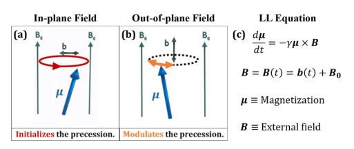
<figcaption class="paper-figure-caption"><b>Fig 1.</b> FIG. 1. Magnetization dynamics induced by different excitation fields. (a) In-plane field dynamics. (b) Out-of-plane field dynamics. (c) Landau-Lifshitz equation, where µ is the magnetization vector and B(t) is the total magnetic field, composed of an oscillatory field component, b(t), and a static field, B0. Adapted from [10].</figcaption>
</figure>
</div>

<p><strong>Summary.</strong> This paper develops a novel theoretical framework using a collective-spin approach to derive the effective Hamiltonian governing uniform magnon excitations in cavity magnonics. By treating the ferromagnet as a single large spin, the authors simplify the derivation significantly compared to site-resolved methods. The key finding is the prediction of an occupation-dependent reduction in the magnon-photon coupling when the system approaches finite-spin saturation under strong driving.</p>
<p><strong>Why it may be interesting.</strong> This work provides a powerful theoretical tool—the collective spin description—to model magnon dynamics in cavity QED settings. The explicit inclusion of finite-size/finite-spin effects is crucial for accurately predicting nonlinear interactions under strong coherent driving, which is highly relevant to quantum optics and circuit QED.</p>
<details>
<summary>Detailed structure</summary>
<p><strong>Main problem.</strong> The paper aims to derive an effective Hamiltonian for uniform magnon dynamics in cavity magnonics using a novel collective-spin approach, bypassing the standard site-resolved bosonic operator method.</p>
<p><strong>Main result.</strong> The collective formulation successfully yields the effective uniform-mode Hamiltonian and predicts that strong driving leads to an occupation-dependent reduction of the magnon-photon coupling due to finite-spin saturation effects.</p>
<p><strong>Method.</strong> It employs a direct Holstein-Primakoff transformation applied to the total spin ($\mathbf{S}$) of the ferromagnet, treating it as a single macrospin, contrasting this with the conventional site-resolved approach.</p>
<p><strong>Model / system.</strong> The system is a ferromagnetic sample modeled by a Heisenberg Hamiltonian coupled to external magnetic fields (static bias and cavity drives). The dynamics are analyzed in the long-wavelength limit, focusing on the uniform magnon mode.</p>
<p><strong>Key observables.</strong> Effective magnon-photon coupling strength ($G_{	ext{eff}}$), occupation number ($ar{n}_M$), and the resulting nonlinear correction factor.</p>
<p><strong>Important parameters / regimes.</strong> The total spin $S=Ns$, the low-excitation regime condition ($\langle\hat{M}^\dagger \hat{M}
angle \ll 2N_s$), and the ratio of cavity wavelength to sample size.</p>
<p><strong>Assumptions / limitations.</strong> The analysis assumes the system is near its fully polarized ground state, that dynamics are dominated by the uniform mode (long-wavelength limit), and neglects surface or non-uniform dipolar effects.</p>
<p><strong>Figures summary.</strong> Not specified in the notes; the focus is on deriving and comparing Hamiltonian forms (Eq. 9 vs Eq. 17/20) and showing the nonlinear correction formula (Eq. 35).</p>
<p><strong>Paper structure.</strong> The paper contrasts the standard site-resolved approach with the proposed collective-spin derivation, demonstrating their equivalence for the uniform mode while highlighting the conceptual simplicity of the macrospin treatment.</p>
</details>
<details>
<summary>Abstract</summary>
<p>We present a direct collective-spin derivation of the effective uniform-mode Hamiltonian used in cavity magnonics. Starting from a nearest-neighbor Heisenberg ferromagnet coupled to long-wavelength magnetic fields, we show that the relevant dynamics can be restricted to the fully symmetric spin sector, where the exchange interaction contributes only a constant energy shift and the ferromagnet behaves as a macrospin of length $Ns$. Applying the Holstein--Primakoff transformation directly to this total spin yields the usual uniform magnon mode and its leading nonlinear corrections without first introducing site-resolved bosonic operators. This collective formulation makes explicit the interpretation of the ferromagnet as a synthetic large-spin atom and provides a compact route to the effective Hamiltonians used in driven and Floquet cavity magnonics. As a physical consequence, the leading nonlinear correction produces an occupation-dependent reduction of the effective magnon--photon coupling, providing a simple signature of finite-spin saturation under strong uniform-mode driving.</p>
</details>
<p><sub><a href="#top">↑ back to top</a></sub></p>

<p><a id="paper-2606.14542"></a></p>
<h3 id="boltzmann-like-occupation-of-nonequilibrium-steady-states-on-dense-networks"><a href="http://arxiv.org/abs/2606.14542v1">Boltzmann-Like Occupation of Nonequilibrium Steady States on Dense Networks</a></h3>
<p><strong>Authors:</strong> Jacob Calvert<br>
<strong>Type:</strong> theory · <strong>Category:</strong> statistical mechanics · <strong>PDF:</strong> <a href="https://arxiv.org/pdf/2606.14542v1">https://arxiv.org/pdf/2606.14542v1</a><br>
<strong>Analysis basis:</strong> full PDF text, analyzed in chunks
<strong>Topic relevance:</strong> 🔥 <code>non-equilibrium dynamics</code> <strong>4/5</strong> · 🔥 <code>non-equilibrium universality</code> <strong>4/5</strong> · <code>driven-dissipative phase transition</code> <strong>3/5</strong> · <code>methods for driven-dissipative</code> <strong>3/5</strong> · <code>Keldysh / 2PI / non-Gaussian methods</code> <strong>1/5</strong> · <code>analog quantum simulation</code> <strong>1/5</strong> · <code>correlated / nonlocal dissipation</code> <strong>1/5</strong> · <code>scars &amp; prethermalization</code> <strong>1/5</strong></p>
<div class="figure-strip-hint">↔ Scroll figures horizontally</div>
<div class="paper-figures-scroll">
<figure class="paper-figure-card">
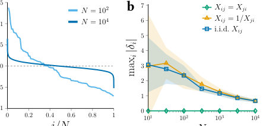
<figcaption class="paper-figure-caption"><b>Fig 1.</b> FIG. 1. Boltzmann-like occupation of NESS on dense networks. (a) Relative errors 𝛿𝑖= 𝜋𝑖/𝜋eq 𝑖 −1 in decreasing order when the 𝐸𝑖 and log 𝑋𝑖𝑗are independent mean-zero Gaussians with respective variances of 1 and 4. (b) Maximum absolute relative error when the log 𝑋𝑖𝑗are symmetric, anti-symmetric, or remain independent. Markers and shading indicate means and ±1 standard deviation over 20 trials.</figcaption>
</figure>
<figure class="paper-figure-card">
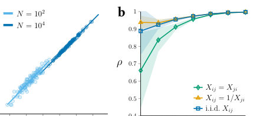
<figcaption class="paper-figure-caption"><b>Fig 2.</b> FIG. 2. Rattling is asymptotically exact. (a) Scatter plots of effective potential versus rattling and (b) correlation coefficients for the con- ditions in Fig. 1a and Fig. 1b, respectively. Marks for 𝑁= 104 in (a) are a uniformly random subset of 100 states.</figcaption>
</figure>
<figure class="paper-figure-card">

<figcaption class="paper-figure-caption"><b>Fig 3.</b> FIG. 3. Consequences of Eq. (5). (a) The EP of the NESS grows faster with 𝑁than the minimal EP when 𝐸𝑖= 2 log 𝑖. (b) Vertex response is increasingly Boltzmann-like as measured by 𝜖𝑖= 𝜕𝐸1𝜋𝑖/𝜕𝐸1𝜋eq 𝑖 −1, under the same conditions as Fig. 1b. Marks and shading indicate the mean and ±1 standard deviation over 20 trials.</figcaption>
</figure>
<figure class="paper-figure-card">
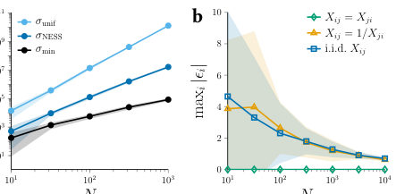
<figcaption class="paper-figure-caption"><b>Fig 4.</b> Figure 3b shows that the relative error in Eq. (26) vanishes with 𝑁analogously to that in Fig. 1b. Following [25], suppose the vertex parameters are 𝐸𝑖= 𝛽𝑖(𝜂), where 𝛽= 1/𝑘𝐵𝑇in terms of Boltzmann’s constant 𝑘𝐵, 𝑇is the temperature, and 𝑖(𝜂) is the system’s underlying (free) energy landscape. A short calculation (see End Matter) using Eq. (26) shows that, if 𝑶is an observable and 𝑽= −𝑑𝜂 is the coordinate conjugate to 𝜂, then</figcaption>
</figure>
</div>

<p><strong>Summary.</strong> The paper proves that even when far from equilibrium and exhibiting high entropy production, the steady-state occupation probabilities on large dense networks resemble the predictions of the Boltzmann distribution. This finding establishes a robust link between local state dynamics (the 'low rattling' heuristic) and global statistical properties in non-equilibrium systems.</p>
<p><strong>Why it may be interesting.</strong> This work provides a powerful generalization of equilibrium statistical mechanics concepts to non-equilibrium systems, which is crucial for understanding open quantum systems driven by external fields or dissipation.</p>
<details>
<summary>Detailed structure</summary>
<p><strong>Main problem.</strong> The central problem is extending the Boltzmann distribution concept from equilibrium statistical mechanics to nonequilibrium steady states (NESS). The authors investigate how occupation probabilities behave in such non-equilibrium settings.</p>
<p><strong>Main result.</strong> They prove that NESS on large dense networks exhibit Boltzmann-like occupation, meaning $\pi_i / \pi_{eq, i} 	o 1$ asymptotically. Furthermore, this occurs even when the system produces extensive entropy.</p>
<p><strong>Method.</strong> The analysis involves solving for the stationary distribution ($\mathbf{W}oldsymbol{\pi} = \mathbf{0}$) and employing asymptotic methods like random matrix theory and strong laws of large numbers to analyze convergence rates.</p>
<p><strong>Model / system.</strong> The model is a Markov jump process on $N$ discrete states, defined by a transition rate matrix $\mathbf{W}$ whose elements depend on vertex parameters ($E_j$) and edge weights ($X_{ij}$).</p>
<p><strong>Key observables.</strong> Steady-state probability ($\pi_i$), equilibrium distribution ($\pi_{eq, i}$), Entropy Production ($\sigma(\mathbf{p})$), and the relative error $\delta_i = \pi_i / \pi_{eq, i} - 1$.</p>
<p><strong>Important parameters / regimes.</strong> Network size $N$ (taken to infinity), edge weights ($X_{ij}$), and vertex energies ($E_j$).</p>
<p><strong>Assumptions / limitations.</strong> The analysis assumes the network is large and dense, and requires finite moments (e.g., $    ext{Var}(X) \in (0, \infty)$) for convergence proofs.</p>
<p><strong>Figures summary.</strong> Figures illustrate relative errors ($\delta_i$) vanishing with $N$ under different weight assumptions, and show comparisons between entropy production rates ($\sigma_{NESS}$ vs. $\sigma_{min}$) that diverge in general cases.</p>
<p><strong>Paper structure.</strong> The paper progresses by first establishing the mathematical framework for NESS on dense networks, proving the asymptotic Boltzmann-like behavior of occupation probabilities, and then contrasting this result with expectations derived from minimal entropy production principles.</p>
</details>
<details>
<summary>Abstract</summary>
<p>A central problem in statistical physics is to extend the Boltzmann distribution to nonequilibrium steady states (NESS). We prove that NESS on large dense networks have Boltzmann-like occupation despite extensive entropy production. We further show that the active-matter heuristic of "low rattling" is asymptotically exact. Intuitively, these NESS spend a greater fraction of their time in states they leave more slowly. This explanation extends to the broader class of "equiaccessible" steady states, which play a role in our analysis akin to that of equilibrium in linear response.</p>
</details>
<p><sub><a href="#top">↑ back to top</a></sub></p>

<p><a id="paper-2606.13772"></a></p>
<h3 id="digital-programming-of-spin-correlations-in-a-fermionic-lattice-quantum-simulator"><a href="http://arxiv.org/abs/2606.13772v1">Digital programming of spin correlations in a fermionic lattice quantum simulator</a></h3>
<p><strong>Authors:</strong> Yann Kiefer, Lars Fischer, Zijie Zhu, Konrad Viebahn, Tilman Esslinger<br>
<strong>Type:</strong> experiment · <strong>Category:</strong> other · <strong>PDF:</strong> <a href="https://arxiv.org/pdf/2606.13772v1">https://arxiv.org/pdf/2606.13772v1</a><br>
<strong>Analysis basis:</strong> full PDF text, analyzed in chunks
<strong>Topic relevance:</strong> 🔥 <code>analog quantum simulation</code> <strong>4/5</strong> · <code>entanglement &amp; information structure</code> <strong>3/5</strong> · <code>exotic spin models in light-matter</code> <strong>3/5</strong> · <code>QC/QI experiment</code> <strong>2/5</strong> · <code>non-equilibrium dynamics</code> <strong>2/5</strong> · <code>Rydberg arrays</code> <strong>1/5</strong> · <code>methods for driven-dissipative</code> <strong>1/5</strong> · <code>quantum measurements</code> <strong>1/5</strong></p>
<div class="figure-strip-hint">↔ Scroll figures horizontally</div>
<div class="paper-figures-scroll">
<figure class="paper-figure-card">
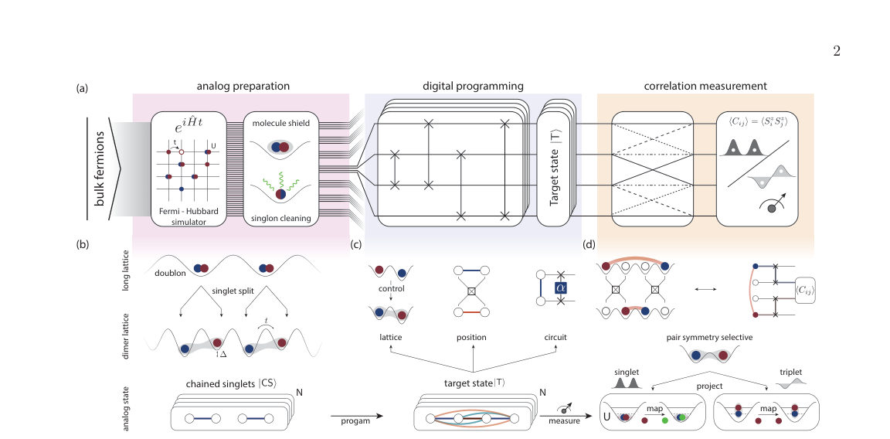
<figcaption class="paper-figure-caption"><b>Fig 1.</b> FIG. 1. Programming spin correlations in a hybrid Fermi-Hubbard simulator. (a) Schematic illustration of the analog-digital protocol to program four-particle quantum correlations. Concatenation of analog and digital methods enables configurable entanglement structures approaching a specific target state |T⟩. The configured correlations are measured with a protocol combining atom-rearrangement and a symmetry-selective detection procedure. (b) Analog state preparation is enabled by bulk evolution of a degenerate Fermi gas in a tunable optical superlattice. Attractive interactions during loading the long lattice achieve a large doublon occupation. Remaining singlons are removed via resonant...</figcaption>
</figure>
<figure class="paper-figure-card">
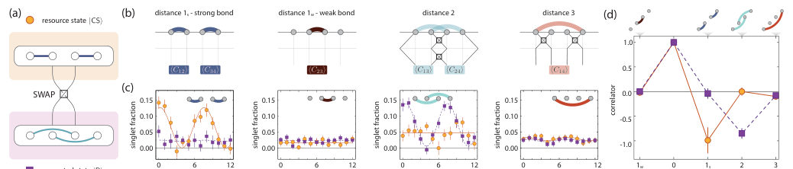
<figcaption class="paper-figure-caption"><b>Fig 2.</b> FIG. 2. Measurement of non-local quantum correlations (a) Measurement of long-distance spin pair correlators illus- trated on two distinct scenarios. The analog resource state |CS⟩is compared to the case where the inner two atoms are swapped without changing the internal spin-configuration. This gives rise to the propagated singlet state |P⟩in which the antiferro- magnetic correlation has propagated to next-nearest neighbours. (b) Measurement of the spin-pair correlator ⟨Cij⟩schematics. The correlators are extracted in individual measurement sequences. For d = 1s,w the appropriate superlattice bond is chosen by controlling the dynamical lattice (s = strong, w = weak). Correlators for...</figcaption>
</figure>
<figure class="paper-figure-card">
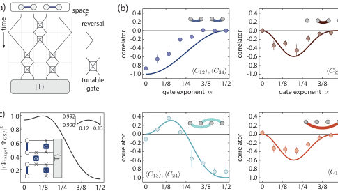
<figcaption class="paper-figure-caption"><b>Fig 3.</b> FIG. 3. Targeted preparation spin-correlations in fermionic singlet chains. (a) schematic representation of the circuit for configuring a target state |T⟩with non-local correlations starting form the chained singlet initial state ( ). The analog resource is programmed with a to- tal of four digital gate-operations characterised by their gate exponent α. In the circuit, black lines denote trajectories of the atoms subject to topological pumping. Intersecting lines realize a collisional gate between atoms. The direction of the pump is reversed once after the first gate and again before the last gate to spatially collimate the four-fermion state. (b) Measured correlator values for d = 1s, d =...</figcaption>
</figure>
<figure class="paper-figure-card">
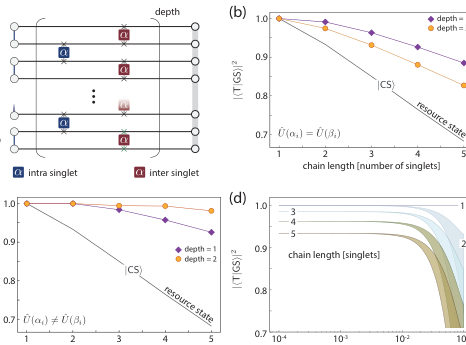
<figcaption class="paper-figure-caption"><b>Fig 4.</b> FIG. 4. Maximal ground state overlap of the tar- get state for larger system size and deeper gate se- quences. (a) Circuit protocol for maximizing the ground state overlap of the output target state. The input state is a system with N neighboring singlets which is manipulated by a sequence of alternating gates on the inter and intra sin- glet bonds. (b) The maximized ground state overlap of the initial state |RN⟩after manipulation with the circuit shown in (a). The gate exponent is optimized for maximal overlap, while being the same for all gates in the circuit. The baseline denotes the overlap of the initial state with the ground state without gate-based manipulation. (c) For arbitrary...</figcaption>
</figure>
</div>

<p><strong>Summary.</strong> The research presents an advanced hybrid protocol to deterministically prepare and measure specific long-range spin correlations in fermionic lattice quantum simulators. By combining analog resource state generation with digital gate sequences, the authors demonstrate precise control over entanglement patterns, enabling the study of strongly correlated matter beyond simple ground states.</p>
<p><strong>Why it may be interesting.</strong> This work provides a concrete experimental roadmap for engineering complex entanglement structures in ultracold atomic systems, moving beyond simple ground state preparation towards programmable quantum simulation of exotic phases.</p>
<details>
<summary>Detailed structure</summary>
<p><strong>Main problem.</strong> The primary goal is the deterministic preparation of strongly correlated quantum states, such as those found in Heisenberg spin chains, using a hybrid analog-digital protocol.</p>
<p><strong>Main result.</strong> The method successfully programs and measures non-local spin correlations, achieving high fidelity overlap with theoretical ground states even for larger chain sizes. The process demonstrates control over entanglement beyond the native Hamiltonian dynamics.</p>
<p><strong>Method.</strong> A hybrid approach combining initial state preparation via analog methods (forming singlet chains) followed by digital programming using tunable collisional quantum gates and controlled atom rearrangement.</p>
<p><strong>Model / system.</strong> The system is a fermionic lattice quantum simulator loaded with ultracold atoms, modeled by an effective Fermi-Hubbard type Hamiltonian. The resource state involves 'chained singlets' formed through adiabatic preparation from attractive interactions.</p>
<p><strong>Key observables.</strong> Spin pair-correlators ($\langle S_z^i S_z^j 
angle$), global singlet fraction, and the overlap fidelity between the prepared state and the target ground state ($|GS
angle$).</p>
<p><strong>Important parameters / regimes.</strong> Gate exponent $\alpha$, gate error rate (robust up to $10^{-2}$), lattice depths, and magnetic field parameters for Feshbach resonance control.</p>
<p><strong>Assumptions / limitations.</strong> The measurement relies on the assumption of SU(2) symmetry for correlator extraction, and long-distance correlations require deterministic atom rearrangement via shuttling/swapping.</p>
<p><strong>Figures summary.</strong> Figures illustrate measuring spin pair correlators at various distances ($d=1, 2, 3$) as a function of gate parameters ($\alpha$), showing increased overlap with theory. Other figures detail the circuit protocol and fidelity dependence on error rates for increasing chain lengths.</p>
<p><strong>Paper structure.</strong> The paper details the hybrid protocol: first, analog preparation to create singlet chains; second, digital programming using tunable gates (e.g., four-layer circuits) to encode specific correlations; and finally, measurement via quantum gate sequences followed by singlet-pair measurements.</p>
</details>
<details>
<summary>Abstract</summary>
<p>Analog quantum simulation provides a highly controlled platform to study diverse quantum many-body phenomena. However, current methods for state initialisation are limited to thermal ensembles or uncorrelated product states. Here we present a hybrid approach that complements analog preparation with a digital quantum-gate protocol. This approach enables the engineering of target states with specific, long-range spin-correlations from the same initial resource state. By applying collisional gates to adiabatically prepared and filtered four-fermion singlet chains, we program diverse spin-correlation patterns, including that of a Heisenberg chain. We measure the spin correlations using a sequence of quantum gates followed by singlet-pair measurements. Our method paves the way to the targeted preparation of strongly correlated states of matter.</p>
</details>
<p><sub><a href="#top">↑ back to top</a></sub></p>

<p><a id="paper-2606.14635"></a></p>
<h3 id="open-wilson-chain-numerical-renormalization-group-approach-to-steady-state-non-equilibrium-quantum-transport"><a href="http://arxiv.org/abs/2606.14635v1">Open Wilson chain numerical renormalization group approach to steady-state non-equilibrium quantum transport</a></h3>
<p><strong>Authors:</strong> Anand Manaparambil, Frithjof B. Anders<br>
<strong>Type:</strong> theory · <strong>Category:</strong> strongly correlated electrons · <strong>PDF:</strong> <a href="https://arxiv.org/pdf/2606.14635v1">https://arxiv.org/pdf/2606.14635v1</a><br>
<strong>Analysis basis:</strong> full PDF text, analyzed in chunks
<strong>Topic relevance:</strong> 🔥 <code>Kondo &amp; dissipative impurity</code> <strong>4/5</strong> · 🔥 <code>methods for driven-dissipative</code> <strong>4/5</strong> · <code>non-equilibrium dynamics</code> <strong>3/5</strong> · <code>Keldysh / 2PI / non-Gaussian methods</code> <strong>2/5</strong> · <code>driven-dissipative phase transition</code> <strong>2/5</strong> · <code>correlated / nonlocal dissipation</code> <strong>1/5</strong> · <code>non-equilibrium universality</code> <strong>1/5</strong></p>
<div class="figure-strip-hint">↔ Scroll figures horizontally</div>
<div class="paper-figures-scroll">
<figure class="paper-figure-card">
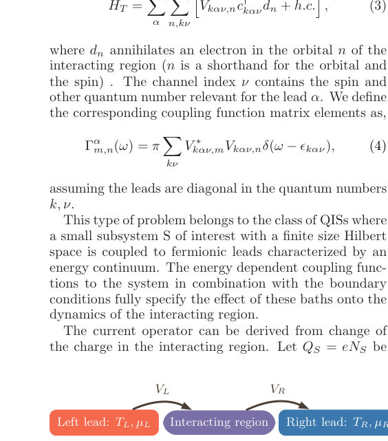
<figcaption class="paper-figure-caption"><b>Fig 1.</b> FIG. 1. Schematic setup for transport: Two leads (L, R) kept at different chemical potentials µL, µR, and tempera- tures TL, TR are coupled to an interacting region. A non- equilibrium steady state current flows through the interacting region driven by potential bias eV = µL −µR, or temperature gradient TL ̸= TR, or both.</figcaption>
</figure>
<figure class="paper-figure-card">
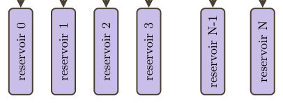
<figcaption class="paper-figure-caption"><b>Fig 2.</b> FIG. 2. Schematic representation of the extension of the Wil- son chain by coupling high-energy reservoirs to each Wilson site by a flavor ν-dependent coupling function ΓH mν(ω) as in- troduced in Refs. [31, 32]</figcaption>
</figure>
<figure class="paper-figure-card">

<figcaption class="paper-figure-caption"><b>Fig 3.</b> FIG. 3. Spectral functions Aσ(ω) = −Im(Gσ(ω + iδ)/π) ob- tained by the FDM-algorithm [47] and the OC-FDM outlined above for T = TK, 0.01 TK and U/Γ = 12, ǫd/Γ = −6 where TK/Γ = 0.0242 was obtained by the condition G(TK) = 1. The inset on the l.h.s shows the same spectral function but over a larger frequency range. The inset in the r.h.s the weight factors wm defined in Eq. (22), OC-FDM in black diamonds and the FDM weight in red circles, as functions of the itera- tion m at T = 0.01 TK with Niter = 60 NRG iterations. The red arrow indicated the iteration m at which ωm ≈T . NRG parameter: Λ = 1.8, Ns = 1000, D = 103 Γ, Niter = 70, b = 0.5, ω0 = 0.1 T, Nz = 2.</figcaption>
</figure>
<figure class="paper-figure-card">

<figcaption class="paper-figure-caption"><b>Fig 4.</b> FIG. 4. Comparison between the zero-bias conductance, cal- culated with the OC-FDM spectral function and obtained by the FDM-algorithm [47] combined with the equation of motion approach [73] for the same NRG parameters and U/Γ = 12, ǫd/Γ = −6.</figcaption>
</figure>
<figure class="paper-figure-card">

<figcaption class="paper-figure-caption"><b>Fig 5.</b> FIG. 5. Non-equilibrium spectral function πΓAσ(ω) vs ω for different values of the bias voltage eV/TK and T = 10−6Γ →0 for U/Γ = 12, ǫd/Γ = −6. The inset shows the distribution of the weights wm for eV/TK = 1 calculated for z = 1. The Wilson shell corresponding to eV is indicated by the red ar- row. NRG parameters: Λ = 1.8, Ns = 1000, D = 103Γ, ρc = 0.02, T trans K /Γ = 2.42 × 10−2, Nz = 2.</figcaption>
</figure>
</div>

<p><strong>Summary.</strong> The paper presents an extension of the Numerical Renormalization Group (NRG) technique, termed OC-FDM, to model non-equilibrium quantum transport in interacting junctions like quantum dots. By coupling the NRG structure to reservoir dynamics via the Bloch-Redfield tensor, it accurately calculates steady-state currents and spectral functions under finite bias or temperature gradients. This method offers a powerful, computationally fast tool for studying strongly correlated physics far from equilibrium.</p>
<p><strong>Why it may be interesting.</strong> This work is highly relevant as it pushes advanced numerical techniques (NRG) into the complex domain of open quantum systems far from equilibrium. The ability to handle Kondo physics under bias/gradient using a computationally efficient method is valuable for modeling nanoscale devices.</p>
<details>
<summary>Detailed structure</summary>
<p><strong>Main problem.</strong> The study investigates non-equilibrium quantum transport through interacting junctions, specifically addressing how to accurately determine the steady-state density operator when driven by finite bias or temperature gradients.</p>
<p><strong>Main result.</strong> The proposed Open Chain Full Density Matrix (OC-FDM) approach successfully extends NRG techniques to the non-equilibrium regime, achieving high accuracy for Kondo physics while being computationally efficient compared to other state-of-the-art methods.</p>
<p><strong>Method.</strong> The method combines the Numerical Renormalization Group (NRG) framework with the Bloch-Redfield master equation formalism. It constructs an effective single-lead description by solving the density matrix evolution iteratively across NRG shells.</p>
<p><strong>Model / system.</strong> The system modeled is a Quantum Dot (QD) or quantum impurity coupled to two leads, described by a Hamiltonian involving Coulomb repulsion and coupling terms. The transport is analyzed under non-equilibrium conditions like finite bias ($\mu_L 
eq \mu_R$) or temperature gradients ($T_L 
eq T_R$).</p>
<p><strong>Key observables.</strong> Charge and spin currents ($I_\alpha$), differential conductance ($dI/dV$), spectral functions $A(\omega)$, and the steady-state density operator $
ho_{    ext{steady}}$.</p>
<p><strong>Important parameters / regimes.</strong> Finite bias voltage ($eV$), temperature gradient ($\Delta T$), external magnetic field ($h_0$), and Kondo energy scales ($T_K$).</p>
<p><strong>Assumptions / limitations.</strong> The OC-FDM approach assumes that density matrix elements of discarded states remain unaltered across NRG iterations, which is necessary to solve the master equation in a manageable form.</p>
<p><strong>Figures summary.</strong> Figures illustrate spectral functions $A(\omega)$ and differential conductance ($dI/dV$) under varying bias and magnetic fields, demonstrating Kondo peak splitting and convergence with established benchmarks.</p>
<p><strong>Paper structure.</strong> The paper builds upon NRG for equilibrium systems by augmenting Wilson sites with reservoirs. It introduces the OC-FDM approach to solve the steady-state density operator via the Bloch-Redfield Tensor (BRT) in the non-equilibrium setting, applying this to calculate transport properties like current and conductance.</p>
</details>
<details>
<summary>Abstract</summary>
<p>The numerical renormalization group (NRG) approach was developed to identify and quantify different equilibrium regimes of quantum impurity systems (QISs) with unprecedented accuracy by a tailored finite size representation. Out of equilibrium, the steady-state density operator is not of the Boltzmannian form but one that is determined by the imposed boundary conditions. We extend the NRG to the nonequilibrium setting by augmenting each Wilson site with a reservoir, whose coupling functions are calculated via a continuous fraction expansion in order to recover the continuum limit exactly. The nonequilibrium parameters such as a finite bias as well as a finite temperature gradient enters through the Bloch-Redfield tensor (BRT), whose zero eigenvector gives the steady-state density operator. We used the resulting open chain full density matrix (OC-FDM) approach with an effective single lead description to investigate the charge and spin transport through a quantum dot (QD) under finite bias and temperature gradient. The influence of lead asymmetry and an external magnetic field on the transport properties are also studied. For completeness, we have also investigated local properties of the QD, such as charge fluctuations and find excellent agreement with real-time quantum Monte Carlo (RT-QMC) data. The OC-FDM approach was able to explore Kondo energy scales as low as $T_K/D \approx 10^{-8}$ in the non-equilibrium regime, as well as show convergence with the established equilibrium benchmarks, such as a quantitative agreement with full density matrix numerical renormalization group (FDM-NRG) and Fermi-liquid scaling at small bias and temperature. Owing to the effective single lead description, a single OC-FDM data point takes orders of magnitude less time on a standard laptop, compared to other state-of-the-art numerical methods.</p>
</details>
<p><sub><a href="#top">↑ back to top</a></sub></p>

<p><a id="paper-2606.14479"></a></p>
<h3 id="sensitivity-of-polaron-molecule-observables-to-mdrgup-like-ultraviolet-deformations-at-low-energies-via-quantum-computing"><a href="http://arxiv.org/abs/2606.14479v1">Sensitivity of polaron-molecule observables to MDR/GUP-like ultraviolet deformations at low energies via quantum computing</a></h3>
<p><strong>Authors:</strong> Ezequiel Valero, Hugo Catala, Victor Ilisie, Germán Rodrigo<br>
<strong>Type:</strong> both · <strong>Category:</strong> quantum gases · <strong>PDF:</strong> <a href="https://arxiv.org/pdf/2606.14479v1">https://arxiv.org/pdf/2606.14479v1</a><br>
<strong>Analysis basis:</strong> full PDF text, analyzed in chunks
<strong>Topic relevance:</strong> 🔥 <code>analog quantum simulation</code> <strong>4/5</strong> · <code>Kondo &amp; dissipative impurity</code> <strong>3/5</strong> · <code>QC/QI experiment</code> <strong>2/5</strong> · <code>non-equilibrium dynamics</code> <strong>2/5</strong> · <code>Keldysh / 2PI / non-Gaussian methods</code> <strong>1/5</strong> · <code>correlated / nonlocal dissipation</code> <strong>1/5</strong> · <code>driven-dissipative phase transition</code> <strong>1/5</strong> · <code>entanglement &amp; information structure</code> <strong>1/5</strong> · <code>methods for driven-dissipative</code> <strong>1/5</strong></p>
<div class="figure-strip-hint">↔ Scroll figures horizontally</div>
<div class="paper-figures-scroll">
<figure class="paper-figure-card">

<figcaption class="paper-figure-caption"><b>Fig 1.</b> Figure 1. Quantum circuit diagram for the ancilla-controlled Ramsey interferometry protocol. The ancilla qubit is prepared in a superposition state via a Hadamard gate to drive a differential time evolution. The algorithmic topology is strategically partitioned: the unconditional bath evolution is driven by standard hopping, Generalised Uncertainty Principle (GUP)-induced next-nearest-neighbour hopping, and background Cooper pairing. Concurrently, the conditional impurity dynamics, which include the renormalised inertia timp and the deformed interaction ˜U GUP imp , are strictly controlled by the ancilla state. A final Hadamard gate enables the extraction of the real part of the coherence...</figcaption>
</figure>
<figure class="paper-figure-card">

<figcaption class="paper-figure-caption"><b>Fig 2.</b> Figure 2. Ramsey coherence signal S(t) = ⟨ˆZ0⟩in a 10- qubit system as a function of the GUP deformation parameter β. The observed increase in phase-space defor- mation correlates with enhanced signal preservation, suggest- ing that quantum gravity corrections act as a stabilisation mechanism for the polaron-molecule Hamiltonian, mitigating bath-induced decoherence, ejecuted on QRed.</figcaption>
</figure>
<figure class="paper-figure-card">

<figcaption class="paper-figure-caption"><b>Fig 3.</b> Figure 3. Ramsey signal for the effective polaron-molecule system in the absence and presence of GUP/MDR corrections. In the undeformed case, the stronger coupling to the molecular bath leads to a more pronounced suppression of the coherent response. Once the deformation is switched on, the time-domain signal develops a larger oscillation contrast and an additional node. This behaviour is consistent with the emergence of the GUP-induced next-nearest-neighbour hopping t′(β), together with the renormalisation of the effective impurity hopping ˜timp(m∗) and the dressed interaction ˜U GUP imp , all of which contribute to reshape the interferometric dynamics, executed on the QRed cluster.</figcaption>
</figure>
<figure class="paper-figure-card">

<figcaption class="paper-figure-caption"><b>Fig 4.</b> Figure 4. Energy spectrum extracted via Fast Fourier Transform (FFT) of the time-domain Ramsey sig- nal, illustrating the impact of the Generalised Un- certainty Principle (GUP) effect. A systematic displace- ment of the resonance towards higher energies is observed as the deformation parameter β increases. This rightward shift indicates that the effective impurity-medium sector becomes progressively stiffer, as the deformation renormalises the lo- cal dressed interaction rather than simply shifting a bare pa- rameter. Furthermore, the concurrent reduction in peak am- plitude demonstrates that the spectral weight becomes less concentrated around the resonant configuration, acting as an...</figcaption>
</figure>
<figure class="paper-figure-card">

<figcaption class="paper-figure-caption"><b>Fig 5.</b> Figure 5. Contribution of MDR/GUP-like physics in the spectroscopic phase diagram. The horizontal axis rep- resents the interaction strength Uimp and the vertical axis denotes the polaron energy Epol, both expressed in units of the hopping amplitude tij. The linear energy shift at high coupling signals the transition to the molecular bound state. Executed on the QRed cluster.</figcaption>
</figure>
</div>

<p><strong>Summary.</strong> This work explores how hypothetical quantum gravity corrections, modeled by GUP/MDR terms, modify the behavior of polarons in fermionic baths. By analyzing spectral and coherence measurements using both theoretical calculations and superconducting quantum processors, the authors demonstrate that these deformations cause measurable shifts in energy spectra and alter the stability of molecular states near crossover points.</p>
<p><strong>Why it may be interesting.</strong> It bridges fundamental high-energy physics concepts (GUP/MDR) into a highly controllable, experimentally accessible platform (ultracold atoms/quantum simulators), providing testable predictions for deviations from standard condensed matter theory.</p>
<details>
<summary>Detailed structure</summary>
<p><strong>Main problem.</strong> The study investigates how ultraviolet (UV) deformations, inspired by Generalized Uncertainty Principles (GUP) or Modified Dispersion Relations (MDR), affect the low-energy many-body physics of a polaron interacting with a molecular bath.</p>
<p><strong>Main result.</strong> These UV deformations enhance the sensitivity of measurable observables like spectral and Ramsey coherence signals near the polaron-molecule crossover, providing a concrete route to probe quantum gravity effects in ultracold atomic systems.</p>
<p><strong>Method.</strong> The authors employ both theoretical many-body techniques (e.g., ladder approximations, effective Hamiltonian construction) and advanced digital quantum simulation protocols on superconducting processors.</p>
<p><strong>Model / system.</strong> The system is modeled as a polaron impurity interacting with a fermionic bath, described by an extended GUP-deformed Hubbard or polaron-molecule Hamiltonian. The physics spans the crossover between localized polaron states and delocalized molecular bound states.</p>
<p><strong>Key observables.</strong> Spectral response (via FFT of Ramsey signal), coherence overlap $S(t)$, effective mass ($m^*$), and the shift/renormalization of resonance energies.</p>
<p><strong>Important parameters / regimes.</strong> The GUP deformation parameter ($eta$), low energy scales, and the polaron-molecule crossover regime.</p>
<p><strong>Assumptions / limitations.</strong> The analysis is phenomenological, treating UV deformations as controlled corrections to an effective low-energy Hamiltonian; quantum simulations rely on approximations like Trotter-Suzuki decomposition and error mitigation techniques.</p>
<p><strong>Figures summary.</strong> Figures illustrate the systematic shift of spectral peaks towards higher energies with increasing $eta$, changes in Ramsey coherence contrast, and phase diagrams mapping out how the crossover point shifts based on the deformation strength.</p>
<p><strong>Paper structure.</strong> The paper builds from theoretical derivations of GUP-corrected propagators and effective interactions to concrete quantum simulation protocols (Ramsey interferometry) used to measure these effects on superconducting hardware.</p>
</details>
<details>
<summary>Abstract</summary>
<p>We show that impurity many-body observables can display enhanced sensitivity to ultraviolet deformations of generalized-uncertainty-principle and modified-dispersion-relation type at accessible energy scales. Using a deformed polaron-molecule Hamiltonian constructed to preserve the infrared sector, we quantify the impact of such deformations on spectral and Ramsey observables and implement the corresponding dynamics in a controlled quantum computing setting. We identify regimes near the polaron-molecule crossover where small ultraviolet deformations are strongly amplified, leading to experimentally resolvable changes in quasiparticle properties and spectral response. Our results establish a concrete sensitivity-based route to low-energy quantum-gravity phenomenology in a well-defined many-body platform and delimit the validity of the effective description. Furthermore, we report experimental validation on the QRed superconducting quantum processor (BSC-CNS).</p>
</details>
<p><sub><a href="#top">↑ back to top</a></sub></p>

<p><a id="paper-2606.14519"></a></p>
<h3 id="extending-covariant-fluctuation-theorems-into-quantum-regime-through-quasiprobability-approach"><a href="http://arxiv.org/abs/2606.14519v1">Extending Covariant Fluctuation Theorems into Quantum Regime through Quasiprobability Approach</a></h3>
<p><strong>Authors:</strong> Ji-Hui Pei, Tingzhang Shi, Jin-Fu Chen, H. T. Quan<br>
<strong>Type:</strong> theory · <strong>Category:</strong> statistical mechanics · <strong>PDF:</strong> <a href="https://arxiv.org/pdf/2606.14519v1">https://arxiv.org/pdf/2606.14519v1</a><br>
<strong>Analysis basis:</strong> full PDF text, analyzed in chunks
<strong>Topic relevance:</strong> 🔥 <code>Keldysh / 2PI / non-Gaussian methods</code> <strong>4/5</strong> · <code>methods for driven-dissipative</code> <strong>3/5</strong> · <code>non-equilibrium dynamics</code> <strong>3/5</strong> · <code>non-equilibrium universality</code> <strong>3/5</strong> · <code>correlated / nonlocal dissipation</code> <strong>1/5</strong> · <code>driven-dissipative phase transition</code> <strong>1/5</strong></p>
<div class="figure-strip-hint">↔ Scroll figures horizontally</div>
<div class="paper-figures-scroll">
<figure class="paper-figure-card">

<figcaption class="paper-figure-caption"><b>Fig 1.</b> FIG. 1. Numerical results of the characteristic function and distribution function. The parameters in the protocol are chosen as β = 1.5, vb = 0.5, T = 1.0, σ = 1.0, gN0 = 3.5. (a) The real part of the characteristic function of the joint WMH quasiprobability distribution of the work 2-vector. (b) The logarithmic ratio between χWMH({ ˜wµ}) and ¯χWMH({−˜wµ + iβµ}). The deviation from 0 indicates the breakdown of the Crooks fluctuation theorem (Eq. (8)). (c) The marginal distribution of the energy component PW 0 rest(w0) in the forward process and the corresponding ¯PW 0 rest(−w0) exp(−βw0) in the reverse process. The probability density consists of a continuous distribution and a delta...</figcaption>
</figure>
</div>

<p><strong>Summary.</strong> This paper develops a quasiprobability approach to extend covariant fluctuation theorems into the challenging realm of relativistic quantum systems. By combining Wigner and Margenau-Hill distributions, the authors successfully derive generalized Jarzynski equalities while demonstrating that the full Crooks theorem only holds for specific linear combinations of work and heat 4-vectors due to operator non-commutativity.</p>
<p><strong>Why it may be interesting.</strong> This work provides a rigorous mathematical framework for applying non-equilibrium statistical mechanics concepts (fluctuation theorems) to relativistic quantum field theory, which is crucial for understanding energy exchange in high-energy or curved spacetime contexts.</p>
<details>
<summary>Detailed structure</summary>
<p><strong>Main problem.</strong> The primary challenge is extending covariant fluctuation theorems, which treat work as a 4-vector, into the quantum regime where operator non-commutativity complicates defining joint probability distributions.</p>
<p><strong>Main result.</strong> While the standard covariant Crooks theorem fails for the joint distribution due to non-commutativity, the Jarzynski equality holds covariantly, and the fluctuation theorems can be recovered for specific linear combinations of work and heat 4-vectors.</p>
<p><strong>Method.</strong> The authors introduce a novel quasiprobability distribution combining Wigner and Margenau-Hill formalisms to handle the joint characteristic function of the work 4-vector in a covariant manner.</p>
<p><strong>Model / system.</strong> The analysis is performed on relativistic quantum fields ($\phi(x)$) driven by external classical sources, considering processes between initial and final spacelike hypersurfaces ($\Sigma^-$ to $\Sigma^+$).</p>
<p><strong>Key observables.</strong> Work 4-vector ($W^\mu$), heat 4-vector ($Q^\mu$), joint characteristic functions ($\chi_{WMH}$), and the free energy difference ($\Delta F$).</p>
<p><strong>Important parameters / regimes.</strong> Temperature/Inverse Temperature ($eta$), Lorentz transformations (covariance), and coupling strengths for open systems.</p>
<p><strong>Assumptions / limitations.</strong> The derivation relies on defining a mixed quasiprobability distribution, which is real but not positive-definite; the Crooks theorem only holds for specific linear combinations of observables.</p>
<p><strong>Figures summary.</strong> Figures illustrate numerical results showing the real part of the characteristic function and quantifying the deviation from the standard Crooks relation, while also verifying the relation for specific rest-frame components.</p>
<p><strong>Paper structure.</strong> The paper first establishes the need for a quasiprobability approach due to non-commutativity. It then derives the unique mixed Wigner/MH distribution satisfying covariance. Finally, it applies this framework to derive and verify generalized covariant fluctuation theorems (Jarzynski and Crooks) for both closed and open quantum systems.</p>
</details>
<details>
<summary>Abstract</summary>
<p>The covariant formulation of stochastic thermodynamics requires treating the stochastic work as a 4-vector, posing significant challenges for quantum systems due to the non-commutativity. We introduce a new quasiprobability distribution for the work 4-vector, which combines the Wigner and Margenau-Hill quasiprobabilities. This extends the covariant fluctuation theorems from classical to quantum regime. We illustrate our findings with a scalar field driven by classical particles with a generalized version of trace formula. Our work establishes a quasiprobability approach to studying relativistic quantum thermodynamics in a covariant way.</p>
</details>
<p><sub><a href="#top">↑ back to top</a></sub></p>

<p><a id="paper-2606.14256"></a></p>
<h3 id="a-new-class-of-degenerate-solutions-to-the-massless-dirac-equation-and-their-potential-applications-in-optical-memories"><a href="http://arxiv.org/abs/2606.14256v1">A new class of degenerate solutions to the massless Dirac equation and their potential applications in optical memories</a></h3>
<p><strong>Authors:</strong> Georgios N. Tsigaridas, Aristides I. Kechriniotis, Christos A. Tsonos, Konstantinos K. Delibasis<br>
<strong>Type:</strong> theory · <strong>Category:</strong> other · <strong>PDF:</strong> <a href="https://arxiv.org/pdf/2606.14256v1">https://arxiv.org/pdf/2606.14256v1</a><br>
<strong>Analysis basis:</strong> full PDF text, analyzed in chunks
<strong>Topic relevance:</strong> 🔥 <code>spintronics-quantum-optics interface</code> <strong>4/5</strong> · <code>exotic spin models in light-matter</code> <strong>3/5</strong> · <code>analog quantum simulation</code> <strong>2/5</strong> · <code>driven-dissipative phase transition</code> <strong>2/5</strong> · <code>Kondo &amp; dissipative impurity</code> <strong>1/5</strong> · <code>interference shaping light</code> <strong>1/5</strong> · <code>non-equilibrium dynamics</code> <strong>1/5</strong></p>
<div class="figure-strip-hint">↔ Scroll figures horizontally</div>
<div class="paper-figures-scroll">
<figure class="paper-figure-card">

<figcaption class="paper-figure-caption"><b>Fig 1.</b> Figure 1: Proposed experimental setup for the development of optical memories in graphene and other materials supporting massless Dirac fermions.</figcaption>
</figure>
<figure class="paper-figure-card">

<figcaption class="paper-figure-caption"><b>Fig 2.</b> Figure 2: A sequence of bits recorded on a material supporting massless Dirac fermions. The blue line corresponds to the insulating layer used to suppress the diffusion of the carriers between the bits.</figcaption>
</figure>
</div>

<p><strong>Summary.</strong> This theoretical paper finds a new set of degenerate solutions to the massless Dirac equation, which describe particles whose spin rotates precisely in sync with external electric and magnetic fields. This synchronization property is proposed as the physical mechanism for creating high-density optical memories using graphene or similar 2D materials.</p>
<p><strong>Why it may be interesting.</strong> The coupling between particle spin dynamics (a quantum property) and classical electromagnetic field manipulation via a relativistic equation provides an excellent platform for studying light-matter interaction in 2D topological materials relevant to AMO physics and quantum optics.</p>
<details>
<summary>Detailed structure</summary>
<p><strong>Main problem.</strong> The paper investigates a novel class of degenerate solutions to the massless Dirac equation and explores their potential applications for developing optical memory devices.</p>
<p><strong>Main result.</strong> These solutions demonstrate that particle spin rotates synchronously with the electric and magnetic fields generated by circularly polarized electromagnetic waves. This property suggests a mechanism for writing/reading binary data using light on materials like graphene.</p>
<p><strong>Method.</strong> The authors derived the degenerate spinors by imposing specific conditions ($\Psi^\dagger\gamma\Psi = 0$) on the massless Dirac equation, followed by calculating the resulting electromagnetic fields and spin components.</p>
<p><strong>Model / system.</strong> The model is based on massless Dirac fermions governed by the Dirac equation in the presence of external electromagnetic potentials. The physical system of interest is graphene or similar materials supporting these massless fermions.</p>
<p><strong>Key observables.</strong> Particle spin ($\mathbf{S}$), electric field ($\mathbf{E}$), and magnetic field ($\mathbf{B}$) components, which are shown to be synchronized.</p>
<p><strong>Important parameters / regimes.</strong> The analysis uses natural units ($\hbar=c=1$). The behavior is dependent on the structure of the electromagnetic 4-potential ($b_\mu$) and associated constants ($c_1, c_2, f_0$).</p>
<p><strong>Assumptions / limitations.</strong> The primary assumption is the validity of describing the system using massless Dirac fermions. For localized solutions, the function $f$ must be chosen to ensure square integrability.</p>
<p><strong>Figures summary.</strong> Figure 1 proposes an experimental setup for optical memories in graphene, and Figure 2 illustrates the concept of recording binary data via spin manipulation on such a material.</p>
<p><strong>Paper structure.</strong> The paper introduces the problem by presenting the governing Dirac equation. It then derives the general form of degenerate solutions using specific mathematical constraints. Subsequently, it calculates the associated electromagnetic fields and demonstrates the key physical result: synchronized spin rotation under external waves, concluding with potential applications in optical memory.</p>
</details>
<details>
<summary>Abstract</summary>
<p>In this article, we present a novel class of degenerate solutions to the massless Dirac equation, corresponding to a wide variety of electromagnetic 4-potentials and fields, including both zero field and circularly polarized electromagnetic waves. An interesting property of these solutions is that the spin of the particles rotates in synchronization with the electric and magnetic fields of the electromagnetic waves. These results could be utilized for the development of optical memories based on materials supporting massless Dirac fermions, such as graphene.</p>
</details>
<p><sub><a href="#top">↑ back to top</a></sub></p>

<p><a id="paper-2606.14348"></a></p>
<h3 id="detecting-historical-turning-points-in-italian-media-a-complex-systems-approach-to-a-diachronic-news-corpus"><a href="http://arxiv.org/abs/2606.14348v1">Detecting Historical Turning Points in Italian Media: A Complex Systems Approach to a Diachronic News Corpus</a></h3>
<p><strong>Authors:</strong> Dario Zarcone, Salvatore Miccichè, David Sanchez<br>
<strong>Type:</strong> theory · <strong>Category:</strong> statistical mechanics · <strong>PDF:</strong> <a href="https://arxiv.org/pdf/2606.14348v1">https://arxiv.org/pdf/2606.14348v1</a><br>
<strong>Analysis basis:</strong> full PDF text, analyzed in chunks
<strong>Topic relevance:</strong> 🔥 <code>non-equilibrium universality</code> <strong>4/5</strong> · <code>driven-dissipative phase transition</code> <strong>3/5</strong> · <code>methods for driven-dissipative</code> <strong>3/5</strong> · <code>non-equilibrium dynamics</code> <strong>3/5</strong> · <code>Keldysh / 2PI / non-Gaussian methods</code> <strong>1/5</strong></p>
<div class="figure-strip-hint">↔ Scroll figures horizontally</div>
<div class="paper-figures-scroll">
<figure class="paper-figure-card">

<figcaption class="paper-figure-caption"><b>Fig 1.</b> Figure 2: Empirical confirmation of Zipf’s and Heaps’ laws in the corpus.</figcaption>
</figure>
<figure class="paper-figure-card">

<figcaption class="paper-figure-caption"><b>Fig 2.</b> Figure 3: Monthly TF-IDF scores of falling and rising words across the time period. The top 5 falling words (blue) and top 5 rising words (green) are selected based on their linear coefficient, representing the slope of a regression line fitted to each term’s monthly scores over the whole period.</figcaption>
</figure>
<figure class="paper-figure-card">

<figcaption class="paper-figure-caption"><b>Fig 3.</b> Figure 4: Relationship between word Fano factors and temporal variability. (a) TF-IDF time series of two example words, illustrating a word with low Fano factor and one with high Fano factor. (b) Distribution of word Fano factors (log-log scale).</figcaption>
</figure>
<figure class="paper-figure-card">

<figcaption class="paper-figure-caption"><b>Fig 4.</b> Figure 5: Distribution of the rescaled Fano factor across different timescales. The rescaling function is defined as Z = (log F −µlog F )/σlog F , where µlog F and σlog F are the mean and standard deviation of the log Fano factor at each timescale. The collapse across timescales shows that burstiness is a fundamental property of lexical dynamics in media discourse.</figcaption>
</figure>
<figure class="paper-figure-card">

<figcaption class="paper-figure-caption"><b>Fig 5.</b> Figure 6: Number of changepoints per month, as found using the Robust PELT method- ology with the L2 cost function on the monthly time series of the words in the corpus. The biggest amount of changepoints happen in the transition between the First and the Second Republic, in 1994.</figcaption>
</figure>
</div>

<p><strong>Summary.</strong> This work applies tools from statistical physics and complex systems theory to analyze a massive historical news corpus. By tracking semantic drift, word salience shifts, and informational entropy over time, the authors successfully identified major societal turning points, such as Italy's political transition in the mid-1990s, without needing prior knowledge of these events.</p>
<p><strong>Why it may be interesting.</strong> While not physics-based, the methodology of detecting non-equilibrium transitions (regime shifts) in complex data streams—using diagnostics like entropy minima or sudden changes in correlation structure—is mathematically analogous to identifying critical points or phase transitions in physical systems.</p>
<details>
<summary>Detailed structure</summary>
<p><strong>Main problem.</strong> The research aims to detect historical turning points or regime shifts within media discourse by treating the evolution of language use as a complex, non-equilibrium system.</p>
<p><strong>Main result.</strong> Significant transitions in Italian media discourse were detected around the mid-1990s (First to Second Republic transition) and during major international conflicts, characterized by measurable changes in semantic structure and word salience.</p>
<p><strong>Method.</strong> The study combines Natural Language Processing (NLP)—using techniques like TF-IDF and LSA—with tools from complex systems theory, such as changepoint detection (PELT) and entropy analysis.</p>
<p><strong>Model / system.</strong> The system modeled is the evolving discourse of a large diachronic corpus ($\approx 600,000$ articles from <em>La Repubblica</em>). The state space is mapped into a reduced semantic vector space via LSA, allowing tracking of the 'center of mass' trajectory over time.</p>
<p><strong>Key observables.</strong> Word salience (lexical level), Semantic Trajectory (semantic level), Spectral Entropy $H(p)$, and the number/timing of statistical changepoints.</p>
<p><strong>Important parameters / regimes.</strong> The corpus time span (1985–2000); the aggregation timescale for analysis (day, week, month, year).</p>
<p><strong>Assumptions / limitations.</strong> The discourse evolution can be accurately captured by tracking changes in word co-occurrence statistics and semantic vector centroids; the single-source nature of the corpus limits generalizability.</p>
<p><strong>Figures summary.</strong> Figures illustrate document length distributions, time series of word salience (showing rising/falling political terms), the trajectory of media discourse on principal components, and similarity matrices showing block structures corresponding to distinct historical regimes.</p>
<p><strong>Paper structure.</strong> The paper follows a progression from corpus description and basic statistics (token counts, Zipf's law) to advanced time-series analysis: first lexical dynamics using Fano factors/PELT, followed by semantic mapping using LSA trajectories and entropy calculations to pinpoint regime shifts.</p>
</details>
<details>
<summary>Abstract</summary>
<p>The increasing availability of large-scale textual corpora has opened new possibilities for data-driven, quantitative approaches to historical analysis using Natural Language Processing (NLP). However, diachronic corpora with historical relevance from the pre-digital era remain scarce and often incomplete. We present a quantitative approach to historical analysis based on the reconstruction and exploration of a diachronic corpus of around 600,000 articles from the Italian newspaper "La Repubblica", covering all the articles published from the 1st of January 1985 to the 31st of December 2000 - a period of major political, social, and geopolitical change in Italy and globally. Using NLP techniques, we analyze the text at both lexical and semantic levels; we then apply tools from complex systems and statistical physics to trace shifts in media discourse over time. This allows us to detect key transition periods, such as the transition from the First Republic to the Second Republic in Italy, or major international conflicts like the Gulf War or the Kosovo War, without relying on prior labeling. The results show how combining computational linguistics with ideas from complex systems can offer new quantitative insight into historical changes, opening up new paths for studying the dynamics of media and society through large-scale textual data.</p>
</details>
<p><sub><a href="#top">↑ back to top</a></sub></p>

<p><a id="paper-2606.14133"></a></p>
<h3 id="diffusion-driven-autocatalytic-dynamics-on-a-sphere"><a href="http://arxiv.org/abs/2606.14133v1">Diffusion-driven autocatalytic dynamics on a sphere</a></h3>
<p><strong>Authors:</strong> Denis S. Grebenkov<br>
<strong>Type:</strong> theory · <strong>Category:</strong> statistical mechanics · <strong>PDF:</strong> <a href="https://arxiv.org/pdf/2606.14133v1">https://arxiv.org/pdf/2606.14133v1</a><br>
<strong>Analysis basis:</strong> full PDF text, analyzed in chunks
<strong>Topic relevance:</strong> 🔥 <code>non-equilibrium universality</code> <strong>4/5</strong> · <code>driven-dissipative phase transition</code> <strong>3/5</strong> · <code>methods for driven-dissipative</code> <strong>3/5</strong> · <code>non-equilibrium dynamics</code> <strong>2/5</strong> · <code>Keldysh / 2PI / non-Gaussian methods</code> <strong>1/5</strong> · <code>correlated / nonlocal dissipation</code> <strong>1/5</strong></p>
<div class="figure-strip-hint">↔ Scroll figures horizontally</div>
<div class="paper-figures-scroll">
<figure class="paper-figure-card">

<figcaption class="paper-figure-caption"><b>Fig 1.</b> Figure 1. Moments Nk(t|R) of the population size for diffusion with D = 1 outside the unit ball (R = 1) in the subcritical (qc = 0.5, panel a), critical (qc = 1, panel b), and supercritical (qc = 1.5, panel c) regimes. Thick lines present the numerical integration of Eqs. (26), whereas thin lines show the asymptotic behavior: Eq. (34) for panel a, Eq. (30) for panel b, and Eq. (36) for panel c.</figcaption>
</figure>
<figure class="paper-figure-card">

<figcaption class="paper-figure-caption"><b>Fig 2.</b> Figure 2. Distribution Qk(t|R) of the population size for diffusion with D = 1 outside the unit ball (R = 1) in the subcritical (qc = 0.5, panel a), critical (qc = 1, panel b), and supercritical (qc = 1.5, panel c) regimes. Solid black line indicates the steady-state distribution Qk(∞|R) given by Eq. (46), whereas colored lines show 64 distributions with t ranging on the logarithmic scale from 10−3 (dark blue) to 101</figcaption>
</figure>
<figure class="paper-figure-card">

<figcaption class="paper-figure-caption"><b>Fig 3.</b> Figure 3. Time evolution of the probabilities Qk(t|R) for diffusion with D = 1 outside the unit ball (R = 1) in the subcritical (qc = 0.5, panel a), critical (qc = 1, panel b), and supercritical (qc = 1.5, panel c) regimes. Thick lines present Qk(t|R) obtained via a numerical integration of Eq. (41), whereas thin horizontal lines show the corresponding steady-state values Qk(∞|R) given by Eq. (46). Note that the thick dashed line (k = 50) is not visible on panel ’a’, because Q50(t|R) &lt; 10−6 in the considered time interval.</figcaption>
</figure>
</div>

<p><strong>Summary.</strong> This work analyzes autocatalytic dynamics where particles diffuse outside a sphere while replicating upon reaching the boundary. The competition between diffusion escape and self-catalysis leads to three distinct long-time regimes: extinction, steady-state maintenance, or explosive growth. By solving moment equations using advanced mathematical techniques like Laplace transforms, the authors characterize the precise scaling laws governing these transitions.</p>
<p><strong>Why it may be interesting.</strong> While focused on classical diffusion and reaction kinetics, the concept of phase transitions (subcritical/critical/supercritical) based on a control parameter ($q_c$) is highly relevant to non-equilibrium statistical mechanics and pattern formation in complex systems.</p>
<details>
<summary>Detailed structure</summary>
<p><strong>Main problem.</strong> The study investigates the collective dynamics of independent particles diffusing outside a spherical surface where they undergo autocatalytic replication at a prescribed rate.</p>
<p><strong>Main result.</strong> The system exhibits three distinct long-time regimes (subcritical, critical, supercritical) characterized by different behaviors for population moments and mean size, including power-law or exponential growth/decay.</p>
<p><strong>Method.</strong> The analysis uses generating functions and integral equations to track the time evolution of population moments and probability distributions. Asymptotic behavior is determined using Laplace transforms in the long-time limit.</p>
<p><strong>Model / system.</strong> The model describes diffusion in an exterior domain (outside a ball) with autocatalytic reactions occurring on the boundary surface ($\partial\Omega$). The dynamics are governed by the competition between particle escape to infinity and local branching/replication events.</p>
<p><strong>Key observables.</strong> Mean population size $\langle N(t) 
angle$, variance, higher-order moments ($N_k$), and the full probability distribution $Q_k(t)$.</p>
<p><strong>Important parameters / regimes.</strong> The catalytic rate ($q_c$) relative to a critical value ($q_{crit}$), which determines the system's long-term fate.</p>
<p><strong>Assumptions / limitations.</strong> The analysis assumes rotational symmetry of the domain (exterior of a ball) and relies on explicit forms for diffusion propagators. The asymptotic results are noted to be expected to hold for generic exterior domains.</p>
<p><strong>Figures summary.</strong> Figures illustrate the time evolution of population moments ($N_k$) across subcritical, critical, and supercritical regimes, comparing numerical integration against derived asymptotic formulas.</p>
<p><strong>Paper structure.</strong> The paper builds from defining the dynamics via propagators in an unbounded domain to deriving integral equations for moments. It then performs a detailed analysis of the long-time asymptotics by examining different parameter regimes ($q_c$ vs $q_{crit}$) using Laplace transforms.</p>
</details>
<details>
<summary>Abstract</summary>
<p>We study the collective dynamics of independent particles that diffuse outside a spherical surface, on which they are replicated with a prescribed catalytic rate. In spatial dimensions three and higher, the transient nature of diffusion creates the competition between autocatalytic and escape events, thus leading to a rich phase diagram between subcritical (extinction), critical (steady-state), and supercritical (growth) regimes at long times. The rotational symmetry of the domain and an explicit form of the single-particle diffusion propagator allow us to obtain the statistics of the population size (i.e., the number of particles). In this way, we analyze the mean population size, its variance and higher-order moments, as well as the full distribution. In particular, we obtain a fully explicit form of the distribution at long times and describe a slow, power-law approach to this steady-state limit.</p>
</details>
<p><sub><a href="#top">↑ back to top</a></sub></p>

<p><a id="paper-2606.14651"></a></p>
<h3 id="generic-long-range-correlations-in-nonequilibrium-mixtures"><a href="http://arxiv.org/abs/2606.14651v1">Generic long-range correlations in nonequilibrium mixtures</a></h3>
<p><strong>Authors:</strong> Jessica Metzger, Yariv Kafri, Mehran Kardar, Julien Tailleur<br>
<strong>Type:</strong> both · <strong>Category:</strong> statistical mechanics · <strong>PDF:</strong> <a href="https://arxiv.org/pdf/2606.14651v1">https://arxiv.org/pdf/2606.14651v1</a><br>
<strong>Analysis basis:</strong> full PDF text, analyzed in chunks
<strong>Topic relevance:</strong> 🔥 <code>non-equilibrium dynamics</code> <strong>4/5</strong> · 🔥 <code>non-equilibrium universality</code> <strong>4/5</strong> · <code>driven-dissipative phase transition</code> <strong>3/5</strong> · <code>Keldysh / 2PI / non-Gaussian methods</code> <strong>1/5</strong> · <code>correlated / nonlocal dissipation</code> <strong>1/5</strong> · <code>methods for driven-dissipative</code> <strong>1/5</strong></p>
<div class="figure-strip-hint">↔ Scroll figures horizontally</div>
<div class="paper-figures-scroll">
<figure class="paper-figure-card">

<figcaption class="paper-figure-caption"><b>Fig 1.</b> FIG. 1. Long-range 3-point correlations in a 1- dimensional 2-temperature mixture. We simulate a mix- ture of Brownian particles with temperatures TA ̸= TB in- teracting through a soft pairwise repulsive force Fint(x) = −U ′ int(x) [panel (c)]. (a)-(b) Correlation between species α, β, γ at locations x1, x2, x3, for (a) α, β, γ = A, A, B and (b) α, β, γ = B, B, A; plotted against x13 = x1 −x3 for dif- ferent slices of (x13, x23) space specified by the ratio x13/x23 (legend). Simulation parameters are κ = TA = 1, TB = 0.1, NA = NB = 200, and L = 800.</figcaption>
</figure>
<figure class="paper-figure-card">

<figcaption class="paper-figure-caption"><b>Fig 2.</b> FIG. 2. Long-range 3-point correlations in a 2- temperature mixture. The 3-point correlation from (a)- (b) particle simulations and (c)-(d) our theory [Eq. (4)] at wavevectors k1, k2, and k3 = −k1−k2 in d = 1. Panels (a), (c) represent species α = β = A, γ = B, and panels (b), (d) rep- resent species α = β = B, γ = A. In the theory, we use parameters χ3 = −1, TA = 1, and TB = 0.1. The simulations are the same as those shown in Fig. 2.</figcaption>
</figure>
</div>

<p><strong>Summary.</strong> The paper demonstrates that unlike equilibrium systems, non-equilibrium mixtures can spontaneously develop long-ranged three-point correlations due to the presence of nonlinear terms. These effects are predicted theoretically using renormalization group methods and confirmed by simulating Brownian colloids in multi-temperature baths. This suggests that long-range order is a generic feature of many out-of-equilibrium physical systems.</p>
<p><strong>Why it may be interesting.</strong> This work provides a powerful mechanism—the role of 'dangerously irrelevant' nonlinear terms—to generate robust, non-trivial long-range correlations in systems driven out of equilibrium, which is highly relevant for understanding active matter and complex fluids.</p>
<details>
<summary>Detailed structure</summary>
<p><strong>Main problem.</strong> The study investigates the origin of long-range correlations in non-equilibrium mixtures, contrasting them with equilibrium systems where such correlations typically require fine-tuning to a critical point.</p>
<p><strong>Main result.</strong> Nonlinearities, even those formally 'dangerously irrelevant' in renormalization group theory, can generate genuinely long-ranged three-point correlations in the isotropic disordered phase of non-equilibrium mixtures.</p>
<p><strong>Method.</strong> The analysis combines theoretical predictions using renormalization group arguments and perturbative calculations of correlation functions with numerical simulations of Brownian colloids.</p>
<p><strong>Model / system.</strong> The system models generic dynamics of conserved, isotropic fields (applicable to multi-temperature or non-reciprocal mixtures) and is simulated using overdamped Brownian particles interacting via a soft repulsive potential.</p>
<p><strong>Key observables.</strong> Two-point and three-point correlation functions ($\langle \phi_\alpha \phi_eta \phi_\gamma 
angle$), analyzed in both real space (decaying as $r^{-2d}$) and Fourier space, particularly focusing on the low-wavenumber limit.</p>
<p><strong>Important parameters / regimes.</strong> The relative temperatures ($T_A 
eq T_B$) of the components are crucial; long-range correlations appear when temperatures are unequal.</p>
<p><strong>Assumptions / limitations.</strong> The analysis relies on treating nonlinearities perturbatively, justified by their irrelevant nature in the renormalization group sense.</p>
<p><strong>Figures summary.</strong> Figures show evidence of long-range three-point correlations ($\sim r^{-2}$ decay) in both 1D and 2D simulations, comparing numerical results against theoretical predictions in real and Fourier space.</p>
<p><strong>Paper structure.</strong> The paper first establishes the general theory for non-equilibrium mixtures, showing that linear theory yields short-range correlations. It then calculates three-point functions perturbatively, demonstrating the emergence of long-range behavior due to nonlinearities, which is confirmed by simulations using Brownian colloids.</p>
</details>
<details>
<summary>Abstract</summary>
<p>We study correlation functions in generic non-equilibrium mixtures, including multi-temperature systems and non-reciprocal field theories. The corresponding linear theory is short-ranged, and nonlinearities are irrelevant in the renormalization-group sense. Nonetheless, we find that these nonlinearities generate long-ranged three-point correlations in the isotropic disordered phase. Our analytical predictions, which are based on a phenomenological theory, are confirmed by numerical simulations of Brownian colloids in contact with thermal baths at different temperatures. Dangerously irrelevant nonlinearities in non-equilibrium mixtures thus offer a new route to long-range correlations, supporting the hypothesis that such correlations are not the exception but the rule out of equilibrium.</p>
</details>
<p><sub><a href="#top">↑ back to top</a></sub></p>

<p><a id="paper-2606.14408"></a></p>
<h3 id="quantum-sensing-through-bosonic-fermionic-bell-state-transitions-in-two-photon-interference"><a href="http://arxiv.org/abs/2606.14408v1">Quantum sensing through bosonic-fermionic Bell-state transitions in two-photon interference</a></h3>
<p><strong>Authors:</strong> Chahat Kaushik, Vimlesh Kumar, G. K. Samanta<br>
<strong>Type:</strong> experiment · <strong>Category:</strong> other · <strong>PDF:</strong> <a href="https://arxiv.org/pdf/2606.14408v1">https://arxiv.org/pdf/2606.14408v1</a><br>
<strong>Analysis basis:</strong> full PDF text, analyzed in chunks
<strong>Topic relevance:</strong> 🔥 <code>quantum optics experiment</code> <strong>4/5</strong> · <code>interference shaping light</code> <strong>3/5</strong> · <code>QC/QI experiment</code> <strong>2/5</strong> · <code>quantum measurements</code> <strong>2/5</strong> · <code>analog quantum simulation</code> <strong>1/5</strong> · <code>driven-dissipative phase transition</code> <strong>1/5</strong> · <code>entanglement &amp; information structure</code> <strong>1/5</strong></p>
<div class="figure-strip-hint">↔ Scroll figures horizontally</div>
<div class="paper-figures-scroll">
<figure class="paper-figure-card">

<figcaption class="paper-figure-caption"><b>Fig 1.</b> FIG. 1. Schematic experimental setup for tunable exchange symmetry control of two photon state. Purple line denotes the pump laser beam at 405 nm, and red line denotes SPDC photons at 810 nm; Q1-4: quarter wave plates (QWP); H1- 4: half wave-plates (HWP); GP-setup: geometric phase; M: mirror; D-PBS and D-HWP: dual wavelength (405 nm and 810 nm) polarizing beam-splitter cube and half-wave plate; C: PPKTP crystal; BS: beam splitter, DM1-2: D-shaped mirror; FC: Fiber coupler; SMF: single mode fibre; BPF: bandpass filter; SPCM: single photon counting module; TDC: time to digital converter; PBS: polarizing beam-splitter cube. Sam- ple: PPKTP crystals of length, L= 5 mm and 10 mm.</figcaption>
</figure>
<figure class="paper-figure-card">

<figcaption class="paper-figure-caption"><b>Fig 2.</b> FIG. 2. Real (top rows) and imaginary (bottom row) parts of the reconstructed density matrices for Bell states (a) |Φ−⟩, (b) |Φ+⟩, (c) |Ψ+⟩, (d) |Ψ−⟩.</figcaption>
</figure>
<figure class="paper-figure-card">

<figcaption class="paper-figure-caption"><b>Fig 3.</b> FIG. 3. Variation of coincidence counts in HOM interferom- etry as function of (a) optical delay for four Bell states, (b) relative phase of Bell state due to the geometric phase, and (c) half-wave plate angle for Bell state transformation. (d) Pictorial diagram of Bell state transformation for variation of relative phase and δ.</figcaption>
</figure>
<figure class="paper-figure-card">

<figcaption class="paper-figure-caption"><b>Fig 4.</b> FIG. 4. Variation of coincidence counts as function of optical delay in HOM interferometer for different relative phase of the Bell states of |Ψ⟩family.</figcaption>
</figure>
<figure class="paper-figure-card">

<figcaption class="paper-figure-caption"><b>Fig 5.</b> FIG. 5. Variation of the coincidence counts as a function of temperature-induced birefringence arising from thermo-optic dispersion for crystals with lengths (a,b) L = 5 mm and (c,d) L = 10 mm. The solid lines represent fits to the experimental data, from which the slopes were determined. Dotted lines are the sinusoidal fit to the experimental data.</figcaption>
</figure>
</div>

<p><strong>Summary.</strong> The paper presents an advanced quantum sensing technique using Hong-Ou-Mandel interference on polarization-entangled photons. By controlling the exchange symmetry between bosonic and fermionic Bell states via a geometric phase imprinted on the pump beam, the method achieves high sensitivity for measuring physical parameters like birefringence. This approach overcomes limitations of conventional setups by keeping the sample outside the main interferometer arms.</p>
<p><strong>Why it may be interesting.</strong> This work provides a novel platform for quantum metrology by engineering the fundamental symmetries of the two-photon state, offering robustness against common experimental noise sources that plague standard interferometers.</p>
<details>
<summary>Detailed structure</summary>
<p><strong>Main problem.</strong> Conventional quantum sensing schemes based on Hong-Ou-Mandel (HOM) interference are susceptible to optical loss and instability when a sample is placed in one interferometer arm.</p>
<p><strong>Main result.</strong> The authors demonstrate a robust, symmetry-controlled quantum sensing scheme where the exchange symmetry of two-photon states can be continuously tuned using geometric phase, allowing for high-resolution measurement of birefringence changes by placing the sample in the pump beam.</p>
<p><strong>Method.</strong> The technique utilizes polarization-entangled photon pairs generated via SPDC and measures coincidence counts as a function of an engineered relative phase ($\phi$) to probe the transition between bosonic (bunching) and fermionic (anti-bunching) two-photon states.</p>
<p><strong>Model / system.</strong> The system involves two-photon interference in a setup where the geometric phase imprinted on the classical pump beam controls the exchange symmetry of the entangled Bell state. The sensing element is typically a birefringent crystal placed directly in the pump beam path.</p>
<p><strong>Key observables.</strong> Coincidence probability $P_c(\phi, \delta)$, which varies sinusoidally with the relative phase $\phi$, and the resulting change in coincidence counts as a function of temperature ($\Delta T$).</p>
<p><strong>Important parameters / regimes.</strong> The phase-modulation linewidth remains fixed at $\pi/2$ independent of photon bandwidth; birefringence resolution achieved down to $10^{-6}$ or better.</p>
<p><strong>Assumptions / limitations.</strong> The method avoids limitations by measuring the sample effect on the pump beam rather than placing it in the main interferometer arms, and relies on established thermo-optic dispersion formulas for analysis.</p>
<p><strong>Figures summary.</strong> Figures illustrate the setup schematic, reconstruction of Bell state density matrices, coincidence counts vs. optical delay (showing bunching/anti-bunching), and crucially, coincidence count variation as a function of temperature-induced birefringence changes.</p>
<p><strong>Paper structure.</strong> The paper first establishes the limitations of conventional HOM sensing. It then introduces the symmetry-controlled scheme using geometric phase to tune Bell states. The core is demonstrating this control via coincidence measurements, culminating in applying this robust method to measure material properties like thermo-dispersive birefringence with high resolution.</p>
</details>
<details>
<summary>Abstract</summary>
<p>Hong-Ou-Mandel (HOM) interference has become a central resource for quantum sensing and metrology owing to its sensitivity to temporal delay and photon indistinguishability. However, existing HOM-based sensing schemes generally rely on inserting a sample into one arm of the interferometer, making the measurement vulnerable to optical loss, alignment instability, and bandwidth-dependent distortion of the interference profile. Here, we demonstrate a symmetry-controlled quantum sensing scheme based on continuous transitions between symmetric (bosonic-like) and antisymmetric (fermionic-like) Bell states in two-photon interference. By imprinting a geometric phase onto the classical pump beam and transferring it to polarization-entangled photons generated via spontaneous parametric down-conversion, we coherently tune the exchange symmetry of the entangled state without altering the temporal or spectral indistinguishability of the photons. The HOM response evolves continuously from bunching to antibunching with a sine square phase dependence, producing a coincidence modulation of approximately 10 * 10^4 counts s^-1 counts/s. In contrast to conventional HOM sensing, the phase-modulation linewidth remains fixed at pi/2, independent of photon bandwidth. Using a birefringent crystal placed directly in the pump beam, we measure thermo-dispersive birefringence with a resolution of the order of 10^{-6} over a broad temperature range. Our results establish exchange symmetry as a controllable resource for robust quantum sensing and symmetry-engineered photonic quantum information processing.</p>
</details>
<p><sub><a href="#top">↑ back to top</a></sub></p>
<hr>
<p>
<a href="index.html">← Index</a>
 · <a href="papers_02.html">Next →</a>
</p>
<hr>

</body>
</html>
